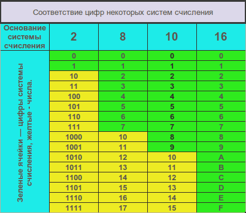

Wiki for a common theme.
1. Programming
1.1. Styleguides
Любой файл, независимо от содержимого, заканчивается пустой строкой.
1.1.1. Markdown
-
Отделяются от других элементов с обеих сторон одной пустой строкой:
-
заголовки всех уровней (
,#, …) -
блоки с исходным кодом
-
списки (но не элементы одного списка)
-
цитаты
-
изображения
-
таблицы
-
-
Путь к файлу или название файла с иходным кодом, переменые, типы данных, значения и все остальное, что связанно с исходным кодом, должно быць выделенно как инлайн код. Например:
code -
Выделение жирным шрифтом используется для важных терминов в контексте предложения.
-
Выделение курсивным шрифтом используется для второстепенных терминов в контексте предложения.
-
Нумерованые списки применяются для списков, где последовательность имеет значение или где заранее известно количество элементов и маловероятно его изменение.
1.2. Концепции ООП
Объектно-ориентированное программирование - это парадигма, которая предоставляет множество концепций, таких как наследование, полимофизм и т.д.
Simula считается первым объектно-ориентированным языком программирования.
Парадигма программирования, в которой все представлено в виде объекта, называется истинно объектно-ориентированным языком программирования.
Smalltalk считается первым истинным объектно-ориентированным языком программирования.
Популярными объектно-ориентированными языками являются:
-
Java
-
C#
-
PHP
-
Python
-
C++
1.2.1. ООП
Объект представляет собой реальную сущность из реального мира, например: BMW X5, Boeing 737, Parker Jotter (ручка).
Объектно-ориентированное программирование - это методология или парадигма для разработки программы с использованием классов и объектов. Это упрощает разработку и обслуживание программного обеспечения, предоставляя некоторые концепции:
-
Объект (Object)
-
Класс (Class)
-
Наследование (Inheritance)
-
Полиморфизм (Polymorphism)
-
Абстракция (Abstraction)
-
Инкапсуляция (Encapsulation)

Помимо этих концепций, есть несколько других терминов, которые используются в объектно-ориентированном дизайне:
-
Связность (Coupling), Единство (Cohesion)
-
Ассоциация (Association)
-
Агрегация (Aggregation), Композиция (Composition)
Object
Любая сущность, которая имеет состояние (state) и поведение (behavior), называется объектом. Например: овчарка, Apple MacBook Pro 13 Touch Bar 2019, Huawei Mate P10 Lite . Это может быть как физический предмет, так и нет.
Объект может быть определен как экземпляр класса. Объект содержит адрес и занимает некоторое место в памяти. Объекты могут взаимодействовать, но не знать состояния и реализации друг друга. Единственная необходимая вещь - это контракт взаимодействия.
Пример: собака - это объект, потому что она имеет такие состояния, как цвет, имя, порода, а также поведение, такое как вилять хвостом, лаять, есть.
Class
Класс - это определенный пользователем шаблон или прототип, из которого создаются объекты. Он представляет собой набор свойств или методов, которые являются общими для всех объектов одного типа.
Inheritance
Когда один объект приобретает все свойства и поведение родительского объекта, то это называется наследованием.
Наследование обеспечивает повторное использование кода.
Наследование используется для достижения полиморфизма во время выполнения.
Polymorphism
Если одна задача выполняется разными способами, это называется полиморфизмом.
В Java используется перегрузка и переопределение методов для достижения полиморфизма.
Например, когда вызвать метод говорить, то: кошка говорит мяу, собака лает гав.
Abstraction
Сокрытие внутренних деталей и предоставление функциональности называется абстракцией. Например, автомобиль, нам не обязательно знать устройство автомобиля, нам достаточно знаний того, что нам позволяет им управлять (руль, педали и т.д.).
В Java используется абстрактный класс и интерфейс для достижения абстракции.
Encapsulation
Связывание (или упаковка) кода и данных в единый блок называется инкапсуляцией. Например, капсула, имеет одну оболочку, которая содержит различные лекарства.
Java Class является примером инкапсуляции.
Java Bean является полностью инкапсулированным классом, потому что все члены данных здесь являются закрытыми.
Coupling
Связность относится к знаниям/информации/зависимости одного класса о другом классе. Если у класса есть подробная информация о другом классе, существует strong coupling.
В Java используются private, protected, public модификаторы для отображения уровня видимости класса, метода и поля.
Можно использовать интерфейсы для weak coupling, потому что нет конкретной реализации.
Cohesion
Сплоченность относится к уровню компонента, который выполняет одну четко определенную задачу. Одна четко определенная задача выполняется highly cohesive методом. weakly cohesive метод разделит задачу на отдельные части.
Например: пакет java.io представляет собой highly cohesive пакет, поскольку он имеет связанные с вводом/выводом классы и интерфейс. Тем не менее, пакет java.util является weakly cohesive пакетом, потому что он имеет несвязанные классы и интерфейсы.
Association
Ассоциация представляет отношения между объектами. Здесь один объект может быть связан с одним или несколькими объектами. Между объектами может быть четыре типа связи:
-
One to One
-
One to Many
-
Many to One
-
Many to Many
Например, одна страна может иметь одного президента (One to One), а президент может иметь много министров (One to Many). Кроме того, у многих членов парламента может быть один президент (Many to One), а у многих министров может быть много департаментов (Many to Many).
Ассоциация может быть:
-
undirectional
-
bidirectional
Ассоциация достигается с помощью:
-
Inheritance
-
Aggregation
-
Composition
Aggregation
Агрегация - это способ достижения ассоциации. Агрегация представляет собой отношение, в котором один объект содержит другие объекты как часть своего состояния.
Агрегация представляет weak relationship между объектами, так как содержащий объект хоть и содержит зависимый, но время их жизни не связано. Если будет удален родительский объект, то дочерние объекты не будут удалены.
Агрегация также называется связью has-a в Java. Мол, наследование представляет собой отношения is-a .
Агрегация еще один способ повторного использования объектов.
Composition
Композиция представляет отношение, в котором один объект содержит другие объекты как часть своего состояния.
Композиция также является способом достижения ассоциации.
Существует strong relationship между содержащим объектом и зависимым объектом. Это состояние, в котором содержащиеся объекты не имеют самостоятельного существования. Если вы удалите родительский объект, все дочерние объекты будут удалены автоматически.
1.2.2. Преимущество ООП над процедурно-ориентированным языком программирования
-
ООП облегчает разработку и сопровождение, в то время как в языке программирования, ориентированного на процедуры, нелегко управлять, если код увеличивается с увеличением размера проекта.
-
ООП обеспечивает скрытие данных, тогда как в языке программирования, ориентированного на процедуры, глобальные данные могут быть доступны из любого места.
-
ООП дает возможность имитировать события в реальном мире гораздо более эффективно. Мы можем обеспечить решение проблемы с реальными словами, если мы используем язык объектно-ориентированного программирования.
1.2.3. В чем разница между object-oriented языком программирования и object-based языком программирования?
Object-based язык программирования следует всем функциям ООП, кроме наследования. JavaScript и VBScript являются примерами object-based языков программирования.
1.3. Структуры данных
Никлаус Вирт, швейцарский информатик, написал в 1976 году книгу под названием Алгоритмы + структуры данных = программы.
Больше сорока лет спустя это уравнение все еще верно. Почти все задачи программирования требуют от разработчика глубокого понимания структур данных, для того что бы выбрать наиболее подходящую для задачи, которая перед ним стоит.
1.3.1. Что такое структуры данных?
Простыми словами, структура данных – это контейнер, который хранит информацию в определенном виде. Из-за такой «компоновки» она может быть эффективной в одних операциях и неэффективной в других. Цель разработчика – выбрать из существующих структур оптимальный для конкретной задачи вариант.
1.3.2. Зачем нужны структуры данных?
Данные являются самой важной сущностью в информатике, а структуры позволяют хранить их в организованной форме.
Какая бы роблема не решалась, приходится иметь дело с данными — будь то зарплата сотрудника, цены на акции, список покупок или даже простой телефонный справочник.
В зависимости от ситуации данные должны храниться в некотором определенном формате. Структуры данных предлагают несколько вариантов таких размещений.
Наиболее часто используемые структуры:
-
Массив (Array)
-
Стек (Stack)
-
Очередь (Queue)
-
Связный список (Linked List)
-
Дерево (Tree)
-
Граф (Graph)
-
Префиксное дерево (Trie)
-
Хэш-Таблица (Hash Table)
1.3.3. Массивы
Массив – это самая простая и наиболее широко используемая из структур. Стеки и очереди являются производными от массивов.
Вот изображение простого массива размером 4, содержащего элементы (1, 2, 3 и 4).

Каждому из них присваивается неотрицательное числовое значение – индекс, который соответствует позиции этого элемента в массиве. Большинство языков определяют начальный индекс массива как 0.
Существует два типа массивов:
-
Одномерные массивы.
-
Многомерные массивы (массивы массивов).
Основные операции с массивами
-
Insert – вставка.
-
Get – получение элемента.
-
Delete – удаление.
-
Size – получение общего количества элементов в массиве.
1.3.4. Стеки
Мы все знакомы с опцией Отменить (Undo), которая присутствует практически в каждом приложении. Вы когда-нибудь задумывались, как это работает?
Для этого вы сохраняете предыдущие состояния приложения (определенное их количество) в памяти в таком порядке, что последнее сохраненное появляется первым. Это не может быть сделано только с помощью массивов. Здесь на помощь приходит стек.
Пример стека из реальной жизни – куча книг, лежащих друг на друге. Чтобы получить книгу, которая находится где-то в середине, вам нужно удалить все, что лежит сверху. Так работает метод LIFO (Last In First Out, последним пришел – первым ушел).
Вот изображение стека, содержащего три элемента (1, 2 и 3). Элемент 3 находится сверху и будет удален первым:

Основные операции со стеками:
-
Push – вставка элемента наверх стека.
-
Pop – получение верхнего элемента и его удаление.
-
isEmpty – возвращает true, если стек пуст.
-
Top – получение верхнего элемента без удаления.
1.3.5. Очереди
Как и стек, очередь – это линейная структура данных, которая хранит элементы последовательно. Единственное существенное различие заключается в том, что вместо использования метода LIFO, очередь реализует метод FIFO (First in First Out, первым пришел – первым ушел).
Идеальный пример этих структур в реальной жизни – очереди людей в билетную кассу. Если придет новый человек, он присоединится к линии с конца, а не с начала. А человек, стоящий впереди, первым получит билет и, следовательно, покинет очередь.
Вот изображение очереди, содержащей четыре элемента (1, 2, 3 и 4). Здесь 1 находится вверху и будет удален первым:

*Основные операции *с очередями:
-
Enqueue – вставка в конец.
-
Dequeue – удаление из начала.
-
isEmpty – возвращает true, если очередь пуста.
-
Top – получение первого элемента.
1.3.6. Связный список
Еще одна важная линейная структура данных, которая на первый взгляд похожа на массив, но отличается распределением памяти, внутренней организацией и способом выполнения основных операций вставки и удаления.
Связный список – это сеть узлов, каждый из которых содержит данные и указатель на следующий узел в цепочке. Также есть указатель на первый элемент – head. Если список пуст, то он указывает на null.
Связные списки используются для реализации файловых систем, хэш-таблиц и списков смежности.
Вот визуальное представление внутренней структуры связного списка:

Типы связных списков:
-
Однонаправленный
-
Двунаправленный
Основные операции со связными списками
-
InsertAtEnd – вставка в конец.
-
InsertAtHead – вставка в начало.
-
Delete – удаление указанного элемента.
-
DeleteAtHead – удаление первого элемента.
-
Search – получение указанного элемента.
-
isEmpty – возвращает true, если связный список пуст.
1.3.7. Графы
Граф представляет собой набор узлов, соединенных друг с другом в виде сети. Узлы также называются вершинами. Пара (x, y) называется ребром, которое указывает, что вершина x соединена с вершиной y. Ребро может содержать вес/стоимость, показывая, сколько затрат требуется, чтобы пройти от x до y.

Типы графов:
-
Неориентированный
-
Ориентированный
В языке программирования графы могут быть представлены в двух формах:
-
Матрица смежности
-
Список смежности
Общие алгоритмы обхода графов:
-
В ширину
-
В глубину
1.3.8. Деревья
Дерево – это иерархическая структура данных, состоящая из вершин (узлов) и ребер, соединяющих их. Они похожи на графы, но есть одно важное отличие: в дереве не может быть цикла.
Деревья широко используются в искусственном интеллекте и сложных алгоритмах для обеспечения эффективного механизма хранения данных.
Вот изображение простого дерева, и основные термины:

Типы деревьев:
-
N-арное дерево;
-
сбалансированное дерево;
-
бинарное дерево;
-
бинарное дерево поиска;
-
дерево AVL;
-
красно-чёрное дерево;
-
2-3 дерево.
Из всех типов чаще всего используются бинарное дерево и бинарное дерево поиска.
1.3.9. Префиксное дерево
Префиксные деревья (tries) – древовидные структуры данных, эффективные для решения задач со строками. Они обеспечивают быстрый поиск и используются преимущественно для поиска слов в словаре, автодополнения в поисковых системах и даже для IP-маршрутизации.
Вот иллюстрация того, как три слова top, thus и their хранятся в префиксном дереве:

Слова размещаются сверху вниз. Выделенные зеленым элементы показывают конец каждого слова.
1.3.10. Хеш-Таблица
Хеширование – это процесс, используемый для уникальной идентификации объектов и хранения каждого из них в некотором предварительно вычисленном уникальном индексе – ключе. Итак, объект хранится в виде пары ключ-значение, а коллекция таких элементов называется словарем. Каждый объект можно найти с помощью его ключа. Существует несколько структур, основанных на хешировании, но наиболее часто используется хеш-таблица, которая обычно реализуется с помощью массивов.
Производительность структуры зависит от трех факторов:
-
функция хеширования
-
размер хеш-таблицы
-
метод обработки коллизий
Вот иллюстрация того, как хэш отображается в массиве. Индекс вычисляется с помощью хеш-функции.

1.4. Design Principles
1.4.1. DRY
DRY - Don’t Repeat Youself - не повторяйся, также известен как DIE - Duplication Is Evil - дублирование это зло. Его суть в том, что нужно избегать повторений одного и того же кода. Лучше использовать универсальные свойства и функции.
1.4.2. KISS
KISS - Keep It Simple, Stupid - не усложняй. Его суть в том, что стоит делать максимально простую и понятную архитектуру, применять шаблоны проектирования и не изобретать велосипед.
1.4.3. YAGNI
YAGNI - You Ain’t Gonna Need It - вам это не понадобится. Его суть в том, чтобы реализовать только поставленные задачи и отказаться от избыточного функционала.
1.4.4. SOLID
SOLID в упрощенном варианте означает, что когда при написании кода используется несколько принципов вместе, то это значительно облегчает дальнейшую поддержку и развитие программы. Полностью акроним расшифровывается так:
-
Single responsibility principle – принцип единственной обязанности (на каждый класс должна быть возложена одна-единственная обязанность);
-
Open/closed principle – принцип открытости/закрытости (программные сущности должны быть закрыты для изменения но открыты для расширения);
-
Liskov substitution principle – принцип подстановки Барбары Лисков (функции, которые используют базовый тип, должны иметь возможность использовать подтипы базового типа, не зная об этом. Подклассы не могут замещать поведения базовых классов. Подтипы должны дополнять базовые типы);
-
Interface segregation principle – принцип разделения интерфейса (много специализированных интерфейсов лучше, чем один универсальный);
-
Dependency inversion principle – принцип инверсии зависимостей (зависимости внутри системы строятся на основе абстракций. Модули верхнего уровня не зависят от модулей нижнего уровня. Абстракции не должны зависеть от деталей. Детали должны зависеть от абстракций);
2. Git
2.1. Git
2.1.1. Benefit

2.1.2. Repositories


2.1.3. GitHub process

2.2. Именование git-репозиториев.
На Git-hosting каждому репозиторию нужно имя, поэтому, естественно, он должен соответствовать следующим критериям:
-
Описательный, т.е. однозначно описывать содержимое репозитория
-
Удобочитаемый
Для многих проектов, которые используют Git, по их названию нельзя ничего сказать о них. Так может есть стандарт, которому нужно следовать? Ответ: нет. Поэтому следует придерживаться здравого смысла, а если быть точнее, название репозитория зависит от проекта и языка программирование, который используется для него.
Если проект предназначен для веб-сайтов, то можно использовать domain name как название проекта. Например:
-
domain.com
-
sub.domain.com
Если проект разрабатывается на Java, то лучше использовать имя конечного artifact (.war, .jar).
По умолчанию лучше использовать:
-
строчные буквы
-
дефисы (как разделители)
the-fellowship-of-the-ring the-two-towers the-return-of-the-king
2.2.1. Клонирование git-repositories
-
Клонирование repository в директорию с таким же названием как Git project:
git clone git@github.com:username/project-name.git-
Клонирование repository в директорию с названием
project:
git clone git@github.com:username/project-name.git project-
Клонирование repository в текущую директорию (она должна быть пуста):
git clone git@github.com:username/project-name.git .2.3. Command for Git
2.3.1. Precondition
-
Все команды кроме
git cloneвыполняются вterminal/cmdв directory с проектом -
Команда
git cloneвыполняется в directorydev, которая должна быть создана в пользовательской directory -
Команды для работы в
cmd:-
cd ..- изменить directory на directory выше -
cd dir_name- изменить directory на directory с именемdir_name- directory в которую необходимо перейти и которая находится в текущей directory -
c:- перейти на дискc
-
2.3.2. Workflow

2.3.3. Q&A
-
Как копировать remote repository когда его нет на компьютере?
Необходимо делать единожды:
git clone https://github.com/GITHUB_USERNAME/GITHUB_REPOSITORY.git, гдеhttps://github.com/GITHUB_USERNAME/GITHUB_REPOSITORY.git- ссылка на НУЖНЫЙ репозиторий -
Как сконфигурировать
user.nameв git?Необходимо делать единожды:
git config --global user.name 'YOUR FULLNAME', гдеYOUR FULLNAME- ваше имя и фамилия -
Как сконфигурировать
user.emailв git?Необходимо делать единожды:
git config --global user.email 'YOUR_EMAIL', гдеYOUR_EMAIL- ваш email -
Как посмотреть состояние working directory?
git status -
Как посмотреть commits для local repository?
git log -
Как переключать branch?
git checkout BRANCH_NAME, гдеBRANCH_NAME- имяbranchв который необходимо переключиться -
Как добавить файлы из working directory в staging area для предстоящего commit?
git add ., где.- все файлы, можно также использовать имя файла, для добавления только файла -
Как добавить файлы из
staging areaвlocal repositoryс определенным заголовком?git commit -m "YOUR_COMMIT_MEASSAGE", гдеYOUR_COMMIT_MEASSAGE- залоговок который НУЖНО использовать -
Как отправить изменения из local repository в remote repository?
git push GITHUB_REPOSITORY, гдеGITHUB_REPOSITORY- краткое имя remote repository -
Как узнать о произошедших изменениях в remote repository?
git fetch GITHUB_REPOSITORY, гдеGITHUB_REPOSITORY- краткое имя remote repository -
Как обновить текущий local repository, если произошли изменения в remote repository?
git pull GITHUB_REPOSITORY, гдеGITHUB_REPOSITORY- краткое имя remote repository -
Как добавить дополнительный remote repository?
git remote add GITHUB_USERNAME https://github.com/GITHUB_USERNAME/GITHUB_REPOSITORY.git, гдеhttps://github.com/GITHUB_USERNAME/GITHUB_REPOSITORY.git- ссылка на remote repository
2.4. Git: советы новичкам
Мы поговорим о системе контроля версий и логике её работы, с самых азов. С Git можно работать с помощью разных клиентов, потому в статье не пойдет речь об интерфейсе пользователя. Это может показаться непривычным, но это сделано намеренно. Вместо этого мы сфокусируемся на рабочем каталоге, коммитах, ветках, командах pull, push и прочих. Когда вы разберетесь в этих понятиях, вам останется выбрать один из Git-клиентов и освоить его интерфейс.
2.4.1. Первое знакомство
Представьте, что у вас есть каталог Work, в котором вы будете работать. Мы будем называть его рабочим каталогом. В нём лежит текстовый файл document.txt. Вы изо дня в день работаете с этим файлом, добавляете в него новый текст, ненужный удаляете, что-то изменяете. Внезапно вам потребовался текст, который вы пару дней назад удалили. Что делать? Если вы не используете систему контроля версий (СКВ), то этот текст не восстановить. А если вы пользуетесь СКВ – это не будет проблемой.
Как это работает? Вы всегда можете отправить свой файл в СКВ, и она его запомнит. Это называется «закоммитить файл» (команда commit). Если вы делаете такие коммиты после всех важных изменений файла, то внутри СКВ образуется множество копий разных его версий. Вы не увидите эти копии в вашем каталоге Work – там, по-прежнему будет лежать лишь один файл. Но все его копии, которые вы коммитили, можно при необходимости достать из СКВ. Там вы сможете посмотреть список всех версий вашего файла и проверить те строки, которые меняли в каждой версии. Удобно, не правда ли?
Предположим, вы меняете свой файл и даже сделали несколько его коммитов. СКВ запомнила закоммиченные версии файла (для краткости будем называть закоммиченную версию файла просто «коммитом»). Теперь выполним команду push – она отсылает ваши коммиты на сервер. В этом есть две главные цели:
-
Сохранность (если у вас испортится компьютер, вся история изменений файла останется на сервере);
-
Возможность нескольким людям одновременно работать над одним файлом.
Как выглядит одновременная работа? У других сотрудников на компьютере тоже есть папка Work и в ней тоже есть файл document.txt. Если вы отредактировали файл, сделали коммит и пуш, то ваши изменения попадут на сервер. Если другой человек выполнит команду pull, с сервера скачаются ваши изменения и человек увидит их в своём файле.
Так над одним и тем же файлом могут работать сразу несколько сотрудников. Они периодически забирают себе изменения других людей (pull), а также вносят свои изменения, коммитят их (commit), и отправляют на сервер (push). Оттуда их смогут забрать другие сотрудники. Интересно, что команда pull скачивает с сервера не только последнюю версию файла, но и все предыдущие, которые кто-либо коммитил. То есть, все коммиты вашего коллеги будут храниться не только на его компьютере, но теперь и на вашем тоже. Благодаря этому можно просмотреть всю историю файла: кто, когда и какие строчки в нём менял.
Для контроля версий мы используем программу Git. Для просмотра истории изменения файла Git не обращается к серверу. Он просто показывает все версии файла, которые уже хранятся на вашем компьютере. Версии файла, которые отредактировали другие, попадают на ваш компьютер после команды pull.
Итоги:
-
Мы доверили Git следить за нашей рабочей папкой;
-
В папке есть текстовый файл, в котором работают наши коллеги;
-
Периодически мы забираем изменения других сотрудников в этом файле (команда pull);
-
А также мы сами меняем этот файл и делаем коммиты, позволяя Git запомнить новую версию файла. Потом мы отправляем наши коммиты на сервер (команда push). Отправлять можно как один коммит, так и сразу несколько. Но лучше пушить почаще, чтобы сотрудники видели актуальную версию файла. Другое дело, если работа не закончена — такую «рабочую» версию файла пушить, конечно, не стоит. Ведь вы создадите неудобства другим сотрудникам.
Убедитесь, что вы чётко поняли разницу между изменением файла, его коммитом и «пушем». Поздравляем! Вы познакомились с основными возможностями системы контроля версий Git. Обратите внимание, мы специально не описываем, как вызывать команды. Потому что есть несколько Git-клиентов с разным интерфейсом. Чуть позже вы выберите один и изучите его. А пока мы просто расскажем, какие есть команды и что они делают.
2.4.2. Удалённый репозиторий, который никто не удалял
Место, куда Git сохраняет ваш файл после каждого коммита, называют локальным репозиторием. Он находится на вашем компьютере – потому и «локальный». Выше мы говорили, что команда push посылает ваши коммиты на сервер. Так вот, в Git не совсем верно говорить «сервер» – правильнее называть это «удалённым репозиторием». «Удалённый» – не потому, что его кто-то удалил, а потому, что он далеко (не у вас на компьютере). В нашем случае удалённый репозиторий находится на сайте GitHub. По своей структуре это такой же репозиторий, как у вас на компьютере. Он так же хранит коммиты. Команда push посылает коммиты с вашего локального репозитория в удалённый, а pull наоборот – забирает новые из удалённого репозитория в ваш локальный. Откуда там взялись свежие коммиты? Их туда отправили другие сотрудники.
Писать каждый раз «удалённый репозиторий» слишком долго. В Git его называют origin. Такова традиция. Дальше мы для краткости будем использовать термин origin вместо «удалённый репозиторий».
2.4.3. Углубляемся в детали
Пора углубиться в важные технические детали. Их довольно много, но понимание логики работы Git пригодится вам в работе. Так что придется набраться терпения.
Конечно, работа в вашем рабочем каталоге обычно ведётся не только в одном файле. Git позволяет работать с каким угодно количеством файлов внутри вашего рабочего каталога, а также внутри вложенных каталогов.
Каждый коммит может запоминать изменения сразу в нескольких файлах. Хорошая практика – в один коммит включать только те изменения, которые логически связаны между собой. Не коммитьте одновременно множество разных изменений – в их истории будет трудно разобраться и вам, и другим сотрудникам.
Если вы добавили в ваш рабочий каталог новый файл и хотите, чтобы его тоже можно было коммитить (и чтобы его увидели другие сотрудники), вам нужно самому добавить файл в Git. Это делает команда add. Пока вы этого не сделали, Git не будет включать в коммиты ваш новый файл. Также можно создавать подкаталоги в рабочем каталоге. Файлы в них нужно добавить в Git тоже с помощью команды add.
Важно понять, что часть файлов в вашем рабочем каталоге может находиться под контролем Git, а часть – нет (например, логи). Следить за этим и добавлять новые файлы в Git – ваша задача.
Кстати, а откуда ваш рабочий каталог вообще возьмётся на вашем компьютере? Он там появится после того, как вы заберёте его с сервера (команда clone).
При каждом коммите нужно добавлять комментарий. В нем кратко, но информативно описывать – какие изменения вы сейчас коммитите.
Git может вам показать список файлов, которые вы изменили с момента предыдущего коммита. Вы не обязаны коммитить их все сразу. Можете выбрать группу файлов, изменения в которых логически связаны, и закоммитить их. Потом выбрать другую – сделать ещё один коммит и так далее. Важно разбивать коммиты на логические.
Перед тем, как сделать push (отправить коммиты в удалённый репозиторий origin), нужно обязательно сначала сделать pull (забрать последние изменения других людей, которые они отправили в origin). Если этого не сделать, система не даст вам выполнить push (появится сообщение об ошибке). Когда узнаете больше об особенностях работы Git, вы поймёте почему так происходит, а пока просто запомните это правило.
2.4.4. Незакоммиченные изменения
Если вы поменяли какие-то файлы, но ещё не закоммитили их, то говорят, что в вашем рабочем каталоге есть незакоммиченные изменения. Ряд команд Git нельзя выполнить в таком состоянии. Например, pull или checkout (переключение файлов рабочей копии на другой коммит). Какие варианты выхода из этой ситуации?
-
Если эти изменения не нужны, то можно отменить незакоммиченые изменения. При этом файл вернётся в состояние последнего коммита;
-
Если изменения полезные, то можно их закоммитить;
-
Ещё можно временно спрятать эти изменения (команда stash). При этом в рабочем каталоге ваши изменения откатятся. Позже вы сможете вернуть спрятанные изменения в рабочий каталог.
2.4.5. Конфликты и их разрешение
Когда вы забираете изменения из origin могут возникнуть конфликты. Это происходит, если:
-
Вы изменили некоторые строчки в текстовом файле, закоммитили изменения, но ещё не сделали push.
-
В это же время кто-то изменил эти же строчки в файле и успел отправить изменения в origin.
-
Вы делаете pull, чтобы забрать чужие изменения. Git пытается объединить чужие изменения с вашими и обнаруживает, что изменены одни и те же строчки. Это называется конфликт (conflict).
Если это произошло, вам придётся разрешить конфликты вручную во всех файлах, где они возникли. Для каждой группы конфликтных строчек вы увидите два варианта – который написали вы и который написал кто-то другой.
Вам нужно выбрать, какой из этих вариантов оставить в результате слияния ваших изменений. Или можно вручную написать какой-то третий вариант – если нужно более тонкое объединение, чем просто копия одного из вариантов.
Дальше повторяем такие же действия для каждой группы конфликтных строк в каждом файле, в котором есть конфликты.
Если конфликт не в текстовом файле, а в бинарном (например, картинка), то там никаких строчек, конечно, нет. Тогда нужно целиком выбрать какой из файлов оставить после слияния – вашу версию файла или чужую. Если вы не уверены, как правильно – свяжитесь с тем, кто менял этот файл последним (это можно узнать в истории изменений файла) и обсудите с ним чья версия файла должна остаться. Не стоит всегда брать свои версии не разобравшись – вдруг изменения другого человека правильнее. А вы их затрёте своими изменениями, если разрешите конфликт в свою пользу. Это явно будет нехорошо.
Когда все конфликты разрешены, можно продолжить операцию, которая была прервана из-за конфликта – обычно это операции pull, merge, rebase.
Если вас напугали конфликты и вы не готовы их разрешать прямо сейчас, можно выполнить команду abort. Она откатит состояние рабочего каталога – сделает его таким, каким он был до начала операции, которая вызвала конфликт.
2.4.6. Слепки
Представьте текущее состояние одновременно всех файлов в вашем рабочем каталоге.
Представили? Назовём это состояние рабочего каталога «слепком». Каждый раз, когда вы делаете коммит очередных изменённых файлов, Git запоминает новый слепок (состояние всех файлов рабочего каталога). Понятие «слепка» мы будем использовать в следующей главе.
Примечания:
-
Слепок – это НЕ состояние только лишь изменённых файлов. Это состояние ВСЕХ файлов рабочего каталога._
-
Когда мы говорим «все файлы рабочего каталога», то, конечно, имеем в виду файлы под контролем Git. О всех остальных файлах Git ничего не знает.
2.4.7. История изменений и её визуальное представление
Историю изменений файлов рабочего каталога можно изобразить в таком виде:

Каждый кружок – это один коммит. На картинке показаны коммиты, которые сделаны один за другим. Это графическое представление истории коммитов.
Кстати, коммит можно рассматривать одним из двух способов:
-
Коммит, как изменение файлов с предыдущего коммита;
-
Коммит, как слепок – новое состояние всех файлов рабочего каталога, которое возникло после закоммиченных изменений.
В каких-то случаях удобно рассматривать историю, как цепочку изменений, а в каких-то – как цепочку слепков. Так что научитесь мысленно оперировать обоими вариантами.
Вот пример, когда удобно рассматривать «слепки». Представьте, что вы хотите посмотреть, как выглядел ваш рабочий каталог три коммита назад. Это легко устроить. Берём историю (см. картинку), отсчитываем 3 кружка (коммита) назад и говорим Git: «Хочу посмотреть, как выглядел рабочий каталог вот после этого коммита». Git изменит файлы в рабочем каталоге соответственно. Другими словами, мы переключили рабочий каталог на слепок этого коммита (или просто «на этот коммит»).
2.4.8. Ветки
Концепция веток не так проста. Представьте, что вам нужно внести множество изменений в файлы вашего рабочего каталога, но эта работа экспериментальная – не факт, что всё получится хорошо. Вы бы не хотели, чтобы ваши изменения увидели другие сотрудники до тех пор, пока работа не будет закончена. Может просто ничего не коммитить до тех пор? Это плохой вариант. Мы уже знаем, что частые коммиты и пуши – залог сохранности вашей работы, а также возможность посмотреть историю изменений. К счастью, в Git есть механизм веток, который позволит нам коммитить и пушить, но не мешать другим сотрудникам.
Перед началом экспериментальных изменений вы должны создать ветку. У ветки есть имя. Пусть она будет называться my test work. Теперь все ваши коммиты будут идти именно туда. До этого они шли в основную ветку разработки – будем называть её master. Другими словами, раньше вы были в ветке master (хоть и не знали этого), а сейчас переключились на ветку my test work. Это выглядит так:

После коммита «3» создана ветка и ваши новые коммиты «4»и «5» пошли в неё. А ваши коллеги остались в ветке master, поэтому их новые коммиты «6», «7», «8» добавляются в ветку master. История перестала быть линейной.
На что это повлияло? Сотрудники теперь не видят изменений файлов, которые вы делаете. А вы не видите их изменений в своих рабочих файлах. Хотя историю изменений в ветке master вы все-таки посмотреть можете.
Итак, теперь вы сможете никому не мешая сделать свою экспериментальную работу. Если её результаты вас не устроит, вы просто переключитесь на ветку master (на её последний коммит – на рисунке это коммит «8»). В момент переключения файлы в вашей рабочей папке станут такими же, как у ваших коллег, а ваши изменения исчезнут. Теперь ваша рабочая копия стала слепком из коммита «8». По картинке видно, что в нём нет ваших изменений, сделанных в ветке my test work.
2.4.9. Слияние веток
Теперь мы знаем, что каждый может создать ветки и работать независимо. Можно по очереди работать то в одной ветке, то в другой – переключаясь между ними. Ветки переключает команда checkout.
Ветки используются не только для временной независимой работы. Часто мы одновременную готовим несколько версий игры. Например, одна версия уже почти готова к публикации и программисты вносят в неё последние исправления. В то же время гейм-дизайнеры уже занимаются следующим обновлением. Им нельзя работать в предыдущей версии потому, что:
-
Их изменения не должны появиться в текущей версии;
-
Любые изменения могут что-то сломать, поэтому перед публикацией версии нужно вносить в неё как можно меньше изменений.
Словом, от веток много пользы. Но вернёмся к примеру с вашей экспериментальной работой. В предыдущей главе мы решили, что она не удалась. Вы вернулись в ветку master и потеряли изменения, сделанные в ветке my test work. А если все получилось? Вы хотите перенести свои изменения в ветку master, чтобы их увидели сотрудники, которые с ней работают. Git может помочь – выполним команду merge ветки my test work в ветку master:

Здесь коммит «8» – это специальный коммит, который называется merge-commit. Когда мы выполняем команду merge, система сама создает этот коммит. В нём объединены изменения ваших коллег из коммитов «5», «6», «7», а также ваша работа из коммитов «3», «4».
Изменения из коммитов «1» и «2» объединять не нужно, ведь они были сделаны до создания ветки. А значит изначально были и в ветке master, и в ветке my test work.
Команда merge ничего не посылает в origin. Единственный ее результат – это merge-commit (на рисунке кружок с номером 8), который появится у вас на компьютере. Его нужно запушить, как и ваши обычные коммиты. Только после этого merge-commit отправится на origin – тогда коллеги увидят результат вашей работы, сделав pull.
2.4.10. Несколько мержей из ветки А в ветку В
В предыдущей главе мы узнали, как сделать новую ветку, поработать в ней и залить изменения в главную ветку. На картинке после объединения ветки слились вместе. Означает ли это, что в ветке my test work теперь работать нельзя – она ведь уже объединилась с master? Нет, вы можете продолжать коммитить в ветку my test work и периодически мержить в главную ветку. Как это выглядит:

Обратите внимание, что отрезки соединяющие ветки не горизонтальные – так показано, из какой ветки в какую был мерж. В этой ситуации было два мержа и оба из правой ветки в левую. Результатом первого объединения стал merge-commit «7», а второго – merge-commit «10». Поскольку мерж происходит из правой ветки в левую, то, например, в слепке «8» есть изменения, которые были сделаны в коммите «3». А вот в слепке «11» нет изменений, которые были сделаны в коммите «5». Убедитесь, что вы понимаете причину этого. Если нет, перечитайте главы о ветках ещё раз.
2.4.11. Мерж между ветками в обе стороны
В предыдущем примере мы всё время мержили из ветки my test work в ветку master. Можно ли мержить в обратную сторону и есть ли в этом смысл? Можно. Есть.
Если вы долго работаете в своей ветке, рекомендуется периодически делать мерж в неё из главной ветки. Это необходимо, чтобы вы работали с актуальными версиями файлов, которые меняют другие люди. Как это выглядит:

Здесь два мержа из ветки my test work в ветку master и один мерж в обратную сторону. Результатом обратного объединения стал merge-commit «8». Благодаря ему, например, слепок коммита «11» содержит изменения из коммита «7». А вот изменений из коммита «9» в слепке «11» уже нет, ведь этот коммит был сделан после мержа.
2.4.12. Коммиты и их хеши
Как Git различает коммиты? На картинках мы для простоты помечали их порядковыми номерами. На самом деле каждый коммит в Git обозначается вот такой строкой:
e09844739f6f355e169f701a5b7ae02c214d5fb0
Это «названия» коммитов, которые Git автоматически даёт им при создании. Вообще, такие строки принято называть «хеш». У каждого коммита хеш разный. Если вы хотите кому-то сообщить об определённом коммите, можно отправить человеку хеш этого коммита. Зная хеш, он сможет найти этот коммит (если это ваш коммит, то, конечно, его надо сначала запушить).
2.4.13. Ветки и указатели
Сейчас мы немного углубимся в то, как Git хранит информацию о ветках. Вроде бы внутреннее устройство Git нас не должно волновать, но это позволит намного лучше понимать, что происходит при выполнении операций в Git. А вы, в свою очередь, сможете избежать ряда ошибок.
Познакомимся с концепцией «указателя». В упрощённом виде указатель состоит из своего названия и хеша. Вот пример указателя:
master – e09844739f6f355e169f701a5b7ae02c214d5fb0
Тут вы скажете: «master – знакомое имя! У нас так называлась главная рабочая ветка». И это совпадение не случайно. Git использует указатели для обозначения веток. Идея простая: если нужна новая ветка, Git создаёт новый указатель, даёт ему имя ветки и записывает в него хеш последнего (самого свежего) коммита ветки. Ветка создана! Благодаря хешу в указателе можно сказать, что указатель ссылается или «указывает» на последний коммит ветки. Этого достаточно Git’у, чтобы выполнять все операции над ветками. То есть, никакой другой информации о том, какие коммиты принадлежат какой ветке Git не хранит. Вот так всё минималистично.
На каждую ветку есть свой указатель. Когда в ветку добавляется очередной коммит, хеш в указателе меняется, чтобы снова «указывать» на последний коммит. Это можно представить, как сдвигание указателя ветки на последний коммит с предпоследнего.
Если вы просите Git переключиться на другую ветку (команда checkout), ему достаточно найти указатель с именем этой ветки и взять из него хеш последнего коммита. Теперь Git знает, как должны выглядеть файлы вашего рабочего каталога (как слепок этого коммита). Git приводит файлы к такому виду – и переключение на ветку произошло.
Если вы не совсем поняли идею указателей и то, как они связаны с ветками, перечитайте главу ещё раз. В Git многое завязано на указатели, поэтому важно чётко понимать механику их работы. К счастью, она совсем не сложная, просто немного необычная. Нужно лишь привыкнуть.
2.4.14. Указатель head
Итак, мы знаем, что указатели – это такие штуки, у которых есть имя, и они ссылаются на определенный коммит (хранят его хеш). Мы знаем, что при необходимости новой ветки, Git создаёт указатель на ее последний коммит и двигает его вперед при каждом новом коммите.
Указатели используются не только для веток. Есть особый указатель head. Он указывает на коммит, который выступает состоянием вашего рабочего каталога. Поняли идею? Вот пример:

Здесь мы видим две ветки, которые представлены двумя указателями: master и test. Мы находимся в ветке master и файлы нашего рабочего каталога соответствуют слепку коммита «4». Откуда мы это знаем? Из того, что указатель head указывает на коммит «4». Точнее, он указывает на указатель master, который указывает на коммит «4». Почему бы не указывать напрямую на коммит «4»? Зачем такой финт с указанием на указатель? Так Git обозначает, что сейчас мы находимся в ветке master.
Мы можем поставить указатель head на любой коммит – для этого есть команда checkout. Вспомним, что на какой коммит показывает head, в таком состоянии и будут файлы в рабочем каталоге (это свойство указателя head). Поэтому переставляя указатель head на другой коммит, мы тем самым заставим Git поменять файлы нашего рабочего каталога. Это может потребоваться, например, чтобы откатиться на старую версию рабочих файлов и посмотреть, как там всё было. А потом можно вернуться назад к последнему коммиту ветки master (checkout master). Если же сделаем checkout test (см. картинку), то head будет указывать на указатель test, который указывает на последний коммит ветки test. Файлы в рабочем каталоге поменяются на слепок «6». Так мы переключились на ветку test.
Подытожим. Перестановка особого указателя head приводит к тому, что файлы рабочего каталога меняются на слепок этого коммита. Но только тогда, когда head указывает на указатель какой-то ветки, Git считает, что мы находимся в этой ветке.
А что происходит, если head указывает на какой-то коммит напрямую (хранит его хеш)? Это состояние называется detached head. В него можно переключиться на время, чтобы посмотреть, как выглядели файлы рабочего каталога на одном из коммитов в прошлом.
Переключение (как между ветками, так и между обычными коммитами) выполняется командой checkout.
2.4.15. Указатель origin/master
Раз удалённый репозиторий (origin) такой же, как наш, значит там тоже есть свои указатели веток? Верно. Например, есть свой указатель master, который ссылается на самый свежий коммит в этой ветке.
Интересно, что когда мы забираем свежие коммиты из origin командой pull, то вместе с коммитами скачиваются и копии указателей оттуда. Чтобы не путать наш указатель master и тот, который скачался с origin, второй из них отображается у нас, как origin/master. Нужно понимать, что origin/master не показывает текущее состояние указателя master в удаленном репозитории, это лишь его копия на момент выполнения команд fetch или pull.
master и origin/master могут указывать на разные коммиты. Станет понятнее, если посмотреть на картинку:

Здесь показана ситуация, когда мы забрали свежие коммиты (командой pull), сделали два новых коммита, но ещё не сделали push. В итоге наш локальный master показывает на последний коммит. А origin/master – это последнее известное нам состояние указателя из удалённого репозитория. Поэтому он и «отстал».
После команды push два верхних коммита уйдут в origin и логично, что origin/master подвинется вверх и тоже будет указывать на наш последний коммит, как и master.
А может ли быть так, что origin/master будет наоборот выше, а master ниже? Может. Вот как это получается. Команда pull забирает свежие коммиты и сразу же помещает их в рабочий каталог. Сразу после команды pull оба указателя origin/master и master будут указывать на один и тот же последний коммит. Но есть ещё команда fetch. Она, как и pull, скачивает последние коммиты из origin, но не торопится обновлять рабочий каталог. Графически это выглядит так (если у вас нет незапушенных коммитов):

До команды fetch указатель master показывал на коммит «3» и это был последний коммит в нашем репозитории. После fetch скачались два новых коммита «4» и «5». В удалённом репозитории указатель master, очевидно, указывал на коммит «5». Этот указатель скачался нам вместе с коммитами и теперь мы его видим как origin/master, указывающий на «5». Всё логично.
Зачем может потребоваться fetch? Например, вы не готовы менять состояние рабочего каталога, а просто хотите поглядеть, чего там накоммитили ваши коллеги? Вы делаете fetch и изучаете их коммиты. Когда будете готовы, делаете команду merge. Она применит скачанные ранее коммиты к вашему рабочему каталогу.
Поскольку в этом простом примере у вас не было незапушенных коммитов, то команде merge объединять ничего не придётся. Она просто подвинет указатели master и head – теперь они будут показывать на коммит «5». Как и origin/master.
Вы можете заметить, что ничего по-настоящему сложного в описанных механиках нет. Есть лишь множество деталей, в которых приходится кропотливо разбираться. Но Git – он такой.
2.4.16. Откуда взялась ветка?
Набираемся терпения и продолжаем рассматривать разные рабочие ситуации. Если мы сделаем несколько коммитов, а потом выполним команду fetch (скачаем свежие коммиты, но пока не применим их в рабочий каталог), то увидим немного сбивающую с толку картину:

Что это ещё за ветка получилась? Мы ведь не создавали никакой ветки. Может её создал кто-то из сотрудников? Нет, никто её не создавал. Восстановим хронологию событий:
-
Сначала мы скачали свежие коммиты. Тогда последним был коммит «2».
-
Затем мы сделали коммиты «3» и «4» (но пока не пушили их).
-
В это время другие сотрудники запушили в удалённый репозиторий коммиты «5», «6» и «7». Тогда мы ничего не знали об этом.
-
Наконец, мы сделали fetch и увидели то, что на картинке.
В Git каждый коммит хранит ссылку на предыдущий (это и позволяет нам соединять кружки на рисунках; каждый отрезок – это ссылка на предыдущий коммит). Когда мы сделали коммит «3», для нас последним коммитом был «2» поэтому они соединены. Но когда на origin кто-то запушил коммит «5», там последним был тоже коммит «2» – ведь мы свои коммиты «3» и «4» ещё не запушили, и на origin их не было. А раз так, то для коммита «5» предыдущим тоже выступает коммит «2», именно эту связь Git и запомнил.
Итого, разные люди независимо друг от друга поменяли результат коммита «2» – вот и возникла ветка. Кстати, эта ветка сейчас есть только в нашем локальном репозитории. В origin её пока нет, поскольку коммиты «3» и «4» мы до сих пор не запушили.
Что дальше? Поскольку мы сделали fetch, а не pull, то скачанные коммиты ещё не применились к нашему рабочему каталогу. Давайте применим их – для этого выполним merge. Результат представлен на картинке:

Произошедшее уже знакомо нам. Образовался автоматический merge-commit «8» – master и head теперь указывают на него. В рабочей копии появились изменения из коммитов «5», «6» и «7», которые объединились с нашими изменениями из коммитов «3» и «4». origin/master по-прежнему указывает на «7», поскольку последние наши операции проходили на локальном компьютере. А origin/master может сдвинуться только после общения нашего репозитория с origin.
Наконец, делаем push, и вот теперь origin/master тоже указывает на «8», ведь: * Наш merge-commit «8» отправлен в origin. * Там он стал последним, а значит удалённый указатель master теперь показывает на него. * Нам скачалась информация об удалённом указателе master и мы её видим как origin/master.
Вот он и показывает на «8». Логично.
Не поддавайтесь малодушному желанию пропустить эти объяснения. В них нет ничего сложного, нужна лишь внимательность. Обязательно пройдитесь по шагам до тех пор, пока не поймете, почему все так работает.
2.4.17. Почему push выдаёт ошибку?
Вы обязательно столкнетесь с тем, что Git выдаёт ошибку при команде push. В чём проблема? Почему он не принимает наши коммиты? Push успешно завершится, только если для каждого отправляемого в origin коммита Git сможет найти предшественника. Пример:

Здесь слева изображены коммиты в вашем локальном репозитории, а справа – коммиты в удалённом репозитории (origin).
Хронология этих коммитов следующая:
-
Сначала в origin были коммиты «1» и «2».
-
Мы сделали pull (в локальном репозитории тоже оказались лишь эти два коммита).
-
Потом мы закоммитили «3» и «4» в локальный репозиторий (но не пушили).
-
Кто-то запушил коммит «5» в origin.
И получилось то, что сейчас на картинке. Разобрались?
Теперь наша попытка запушить «3» и «4» в origin завершится ошибкой. Git откажется пристыковать наши коммиты к последнему коммиту «5» в origin, поскольку в local предшественником для коммита «3» является коммит «2» – а вовсе не «5», как в origin! Для Git важно, чтобы предшественник был тот же.
Проблема решается легко. Перед тем, как сделать push, мы сделаем pull (забираем коммит «5» себе). Тут вы можете просить: «Секунду! А почему это забрать коммит «5» Git может, а послать коммиты «3» и «4» он не может? Вроде же ситуация симметричная в обе стороны». Правильный вопрос! А ответ на него простой. Если бы Git позволил отправить коммиты «3» и «4» в такой ситуации, то пришлось бы делать merge на стороне origin – а кто там будет разрешать конфликты? Некому. Поэтому Git заставляет вас сначала забрать свежие коммиты себе, сделать merge на своем компьютере (если будут конфликты, то разрешить их), а уже готовый результат он позволит вам отправить в origin командой push. При этом, никаких конфликтов в origin уже быть не может.
Давайте посмотрим, как будет выглядеть локальная история, после того, как вы заберете коммит «5» командой pull.

Здесь у «3» и «5» предок «2», как и на предыдущей картинке. А новый коммит «6» – это уже давно известный нам merge-commit.
В таком состоянии локальные коммиты уже можно запушить. Пусть тут и появилось разветвление истории, но обе ветки при мерже объединились. А значит голова у ветки снова одна. То есть, ничего не мешает сделать push. После этого в origin коммиты будут выглядеть такой же точно «петелькой».
Теперь, когда push выдаст вам ошибку, вы уже знаете почему и что с этим делать.
2.4.18. Rebase
В предыдущей главе мы сделали несколько локальных коммитов, а потом командой pull забрали коммиты других сотрудников из удалённого репозитория. У нас в локальном репозитории образовалась как бы «ветка», которая потом обратно объединилась с основной. После push это временное раздвоение ветки попало в origin, откуда его скачают сотрудники и увидят в своей истории. Часто такие «петли» считаются нежелательными. Поскольку вместо красивой линейной истории получается куча петель, которые затрудняют просмотр.
Git предлагает альтернативу. Выше мы делали fetch+merge. Первая команда забирает свежие коммиты, вторая объединяет их с нашими незапушенными коммитами (если они есть) и создаёт merge-commit с результатом объединения.
Так вот, оказывается можно вместо fetch+merge делать fetch+rebase. Что за rebase и чем он отличается от merge? Вспомним ещё раз, как проходил merge в предыдущем примере:

Rebase действует по-другому – он отсоединяет вашу цепочку незапушенных коммитов от своего предка. Напомним, это были коммиты «3» и «4». Они отсоединяются от своего предка «2» и rebase ставит их «сверху» на только что скачанный коммит «5». То есть, «3» и «4» будут прицеплены сверху к «5» (а мерж-коммит «6» вообще не появится). Итог будет таким:

Никакой петли больше нет, история линейная и красивая! Да здравствует rebase! Теперь мы знаем, что при скачивании коммитов из origin лучше объединять их со своими локальными коммитами при помощи rebase, а не merge.
Хорошо, а если речь не о паре-тройке ваших коммитов, а о большой ветке с разработкой новой фичи. Когда настанет время влить эту фичу в главную ветку, как это лучше сделать – через rebase или merge? У обоих способов есть преимущества:
-
rebase позволит сохранить историю простой и линейной – он добавит цепочку ваших коммитов из ветки в конец основной ветки.
-
merge сделает петлю, но зато в истории более наглядно будет прослеживаться история разработки вашей фичи.
Вопрос предпочтения rebase или merge в таких случаях обсудите с ведущим программистом вашего проекта.
2.4.19. Эпилог
Мы с вами разобрались в множестве команд Git для работы с репозиториями:
-
pull
-
commit
-
push
-
add
-
clone
-
checkout
-
stash
-
merge
-
rebase
-
abort
-
fetch
Это не все команды, которые бывают нужны в работе – только самые частые. Будьте готовы, что потребуется освоить и другие. Работать с Git можно при помощи разных git-клиентов. Мы в основном используем эти три:
-
Консольный
-
SourceTree
-
TortoiseGit
Выбор клиента – дело вкуса.
Консольный – работает на всех платформах, но у него крайне аскетичный интерфейс. Если вы не привыкли работать в консоли, то скорее всего вам будет в нем некомфортно.
SourceTree — графический клиент с довольно простым интерфейсом. Есть версии для наших основных платформ: Win и Mac. Однако, сотрудники часто жалуются на его медленную работу и глюки.
TortoiseGit — еще один графический клиент. Есть версия для Win, для Mac`а нет. Интерфейс несколько непривычный, но многим нравится. Жалоб на глюки и тормоза существенно меньше, чем в случае с SourceTree.
Интересно, что и SourceTree, и TortoiseGit не работают с репозиторием Git напрямую. Внутри себя они используют консольный Git. Когда вы нажимаете на красивые кнопки, вызываются консольные команды Git с разными хитрыми параметрами, а результат вызова снова показывают в красивом виде. Использование всеми клиентами консольного Git означает, что все они работают со стандартной файловой структурой Git-хранилища на вашем жёстком диске. А значит можно использовать смешанный стиль работы: одни операции выполнять в одном клиенте, а другие – в другом.
Итак, вы узнали основные концепции, используемые системой контроля версий Git. А также, как работают основные команды. Наверняка при чтении статьи вам не хватало описания «какие кнопки нажимать». Однако, в каждом Git-клиенте это выглядит по-разному, поэтому нам пришлось отделить описание логики от описания интерфейса. Настало время выбрать один из клиентов и изучить его интерфейс пользователя.
2.5. Git for beginner
2.5.1. Что такое системы контроля версий?
Система контроля версий (Version Control System, VCS) представляет собой программное обеспечение, которое позволяет отслеживать изменения в документах, при необходимости производить их откат, определять, кто и когда внес исправления и т.п.
Что такое система контроля версий?
Наверное, всем знакома ситуация, когда при работе над проектом, возникает необходимость внести изменения, но при этом нужно сохранить работоспособный вариант, в таком случае, как правило, создается новая папка, название которой скорее всего будет “Новая папка” с дополнением в виде даты или небольшой пометки, в нее копируется рабочая версия проекта и уже с ним производится работа. Со временем количество таких папок может значительно возрасти, что создает трудности в вопросе отката на предыдущие версии, отслеживании изменений и т.п. Эта ситуация значительно ухудшается, когда над проектом работает несколько человек.
Для решения таких проблем как раз и используется система контроля версий, она позволяет комфортно работать над проектом как индивидуально, так в коллективе. VCS отслеживает изменения в файлах, предоставляет возможности для создания новых и слияние существующих ветвей проекта, производит контроль доступа пользователей к проекту, позволяет откатывать исправления и определять кто, когда и какие изменения вносил в проект. Основным понятием VCS является репозиторий (repository) – специальное хранилище файлов и папок проекта, изменения в которых отслеживаются. В распоряжении разработчика имеется так называемая рабочая копия (working copy) проекта, с которой он непосредственно работает. Рабочую копию необходимо периодически синхронизировать с репозиторием, эта операция предполагает отправку в него изменений, которые пользователь внес в свою рабочую копию (такая операция называется commit) и актуализацию рабочей копии, в процессе которой к пользователю загружается последняя версия из репозитория (этот процесс носит название update).
Централизованные и распределенные системы контроля версий
Системы контроля версий можно разделить на две группы: распределенные и централизованные.
Централизованные системы контроля версий
Централизованные системы контроля версий представляют собой приложения типа клиент-сервер, когда репозиторий проекта существует в единственном экземпляре и хранится на сервере. Доступ к нему осуществлялся через специальное клиентское приложение. В качестве примеров таких программных продуктов можно привести CVS, Subversion.


CVS (Concurrent Versions System, Система одновременных версий) одна из первых систем получивших широкое распространение среди разработчиков, она возникла в конце 80-х годов прошлого века. В настоящее время этот продукт не развивается, это в первую очередь связано с рядом ключевых недостатков, таких как невозможность переименования файлов, неэффективное их хранение, практически полное отсутствие контроля целостности.

Subversion (SVN) – система контроля версий, созданная на замену CVS. SVN была разработана в 2004 году и до сих пор используется. Несмотря на многие преимущества по сравнению с CVS у SVN все-таки есть недостатки, такие как проблемы с переименованием, невозможность удаления данных из хранилища, проблемы в операции слияния ветвей и т.д. В целом SVN был (и остается) значительном шагом вперед по сравнению с CVS.
Распределенные системы контроля версий
Распределенные системы контроля версий (Distributed Version Control System, DVCS) позволяют хранить репозиторий (его копию) у каждого разработчика, работающего с данной системой. При этом можно выделить центральный репозиторий (условно), в который будут отправляться изменения из локальных и, с ним же эти локальные репозитории будут синхронизироваться. При работе с такой системой, пользователи периодически синхронизируют свои локальные репозитории с центральным и работают непосредственно со своей локальной копией. После внесения достаточного количества изменений в локальную копию они (изменения) отправляются на сервер. При этом сервер, чаще всего, выбирается условно, т.к. в большинстве DVCS нет такого понятия как “выделенный сервер с центральным репозиторием”.

Большое преимущество такого подхода заключается в автономии разработчика при работе над проектом, гибкости общей системы и повышение надежности, благодаря тому, что каждый разработчик имеет локальную копию центрального репозитория. Две наиболее известные DVCS – это Git и Mercurial.

Начнем с Mercurial, эта система представляет собой свободную DVCS, которая построена таким образом, что в ней отсутствует понятие центрального репозитория, для работы с этой VCS используется (как правило) консольная утилита hg. Mercurial обладает всеми возможностями системы контроля версий, такими как ветвление, слияние, синхронизация с другими репозиториями. Данный проект используют и поддерживают большое количество крупных разработчиков, среди них Mozilla, OpenOffice, OpenJDK и многие другие. Сам продукт написан на языке Python и доступен на большинстве современных операционных систем (Linux, Windows, Mac OS), также существует значительное количество утилит с графическим интерфейсом для работы с Mercurial. Основным конкурентом Mercurial на рынке распределенных систем контроля версий является Git, который, на сегодняшний день, выиграл гонку за лидерство.

Git – распределенная система контроля версий, разработанная Линусом Торвальдсем для работы над ядром операционной системы Linux. Среди крупных проектов, в рамках которых используется git, можно выделить ядро Linux, Qt, Android. Git свободен и распространяется под лицензией GNU GPL 2 и, также как Mercurial, доступен практически на всех операционных системах. По своим базовым возможностям git схож с Mercurial (и другими DVCS), но благодаря ряду достоинств (высокая скорость работы, возможность интеграции с другими VCS, удобный интерфейс) и очень активному сообществу, сформировавшемуся вокруг этой системы, git вышел в лидеры рынка распределенных систем контроля версий. Необходимо отметить, что несмотря на большую популярность таких систем как git, крупные корпорации, подобные Google, используют свои VCS.
2.5.2. Установка Git
Для того, чтобы начать работать с системой контроля версий Git ее необходимо предварительно установить. Рассмотрим варианты установки этой VCS под Linux и MS Windows.
Установка Git под Linux
Для установки Git под Linux, необходимо зайти на сайт Git и перейти в раздел Downloads. В зависимости от используемой вами версии операционной системы Linux необходимо выбрать тот или иной способ установки Git.
Debian/Ubuntu
apt-get install gitFedora
yum install gitdnf install gitGentoo
emerge --ask --verbose dev-vcs/gitArch Linux
pacman -S gitopenSUSE
zypper install gitMageia
urpmi gitFreeBSD
pkg install gitSolaris 9/10/11 (OpenCSW)
pkgutil -i gitSolaris 11 Express
pkg install developer/versioning/gitOpenBSD
pkg_add gitAlpine
apk add gitУстановка Git под Windows
Для установки Git под Windows необходимо предварительно скачать дистрибутив. Для этого перейдите на страницу https://git-scm.com/
Если вы зашли из под операционной системы (ОС) Windows, главная страница сайта будет выглядеть примерно так, как показано на рисунке ниже. Для других ОС отличие будет заключаться в том, что изменится область для скачивания дистрибутива (см. правый нижний угол).

Для того чтобы скачать Git, нужно нажать на кнопку Downloads for Windows, расположенную в правой части окна.
Процесс дальнейшей установки Git выглядит так.
Запустить установочный файл
Ознакомиться, если есть желание, с лицензионным соглашением и нажать на кнопку Next

Выбрать компоненты, которые следует установить

Указать способ использования Git

В этом окне доступны три возможных варианта:
-
Use Git from Git Bash only
Переменная PATH не модифицируется и работа с Git возможна только через специализированную оболочку, которая называется Git Bash.
-
Use Git from the Windows Command Prompt
В этом случае происходит минимальная модификация переменной окружения PATH, которая позволит работать с Git через командную стоку Windows. Работа через Git Bash также возможна.
-
Use Git and optional Unix tools from the Windows Command Prompt
В переменную PATH вносится значительное количество модификаций, которые позволят, в рамках командной строки Windows, использовать как Git так и утилиты Unix, которые поставляются вместе с дистрибутивом Git.
Наша рекомендация: опция Use Git from the Windows Command Prompt.
Настройка правил окончания строки

Существует два варианта формирования конца строки в текстовых файлах – это Windows стиль и Unix стиль. Данное окно позволяет выбрать одну из опций, определяющих правило формирования окончания строки:
-
Checkout Windows-style, commit Unix-style line endings
Checkout (операция извлечения документа из хранилища и создания рабочей копии) производится в Windows стиле, а commit (операция отправки изменений в репозиторий) в Unix стиле.
-
Checkout as-is, commit Unix-style line endigns
Checkout производится в том формате, в котором данные хранятся в репозитории, а commit осуществляется в Unix стиле.
-
Checkout as-is, commit as-is
Checkout и commit производятся без дополительных преобразований.
Наша рекомендация: опция Checkout Windows-style, commit Unix-style line endings.
Выбор эмулятора терминала, который будет использован с Git Bash

Возможен выбор из двух вариантов:
-
Use MinTTY (the defaul terminal of MSYS2)
Git Bash будет использовать в качестве эмулятора терминала MinTTY.
-
Use Windows’ default console window
Git будет использовать Windows консоль (“cmd.exe”).
Наша рекомендация: опция Use MinTTY (the defaul terminal of MSYS2).
Настройка дополнительных параметров

Доступны следующие параметры:
-
Enable file system caching
Включение операции кэширования при работе с файлами. Эта опция позволит значительно повысить производительность.
-
Enable Git Credential Manager
Предоставляет возможность работы с защищенным хранилищем.
-
Enable symbolic links
Активирует работу с символьными ссылками.
Наша рекомендация: опции Enable file system caching и Enable Git Credential Manager.
Завершение установки
После нажатия на кнопку Install будет произведена установка Git на Windows, по окончании установки пользователь получит соответствующее сообщение.

2.5.3. Настройка Git
Настройка системы Git предполагает, в первую очередь, указание имени пользователя и e-mail, которые используются для подписи коммитов и отправки изменений в удаленный репозиторий.
В Git существует три места, где хранятся настройки:
-
на уровне системы;
-
на уровне пользователя;
-
на уровне проекта (репозитория).
Для того, чтобы сконфигурировать Git, на том или ином уровне, вы можете изменить непосредственно конфигурационные файлы, но для этого нужно знать их формат, либо воспользоваться специальными командами, которые предоставляет Git. Мы рекомендуем использовать команды.
Расположение конфигурационных файлов Git
Windows
-
Уровень системы:
\Program Files\Git\mingw64\etc\gitconfig-
Имейте в виду, что для его изменения вам могут понадобиться права администратора!
-
-
Уровень пользователя:
%HOMEPATH%\.gitconfig -
Уровень репозитория:
папка_с_проектом\.git\config
Linux
-
Уровень системы:
/etc/gitconfig -
Уровень пользователя:
~/.gitconfig -
Уровень репозитория:
папка_с_проектом/.git/config
Конфигурирование Git с помощью утилиты командной строки
Как уже было сказано выше, конфигурирование Git с помощью утилиты командной строки – это наиболее удобный и безопасный способ. Независимо от того, на каком уровне вы хотите менять настройки, команда будет начинаться так:
git configДля уровня системы, мы должны написать:
git config --systemуровня пользователя:
git config --globalуровня приложения:
git configПосле этой команды указывается параметр и его значение.
Например, зададим имя и e-mail разработчика для уровня пользователя.
git config --global user.name "User"git config --global user.email "user@company.com"Для просмотра введенных изменений воспользуйтесь командой:
git config --listДополнительно вы можете указать текстовый редактор, который будет запускать Git, если ему потребуется получить от вас какие-то данные, для этого модифицируйте параметр core.editor:
вариант для Linux:
git config --global core.editor "nano"вариант для Windows:
git config --global core.editor "notepad.exe"2.5.4. Архитектура Git
Для того чтобы двигаться дальше – создавать репозитории, отправлять коммиты, делать новые бранчи (ветви) и т.п. необходимо предварительно ознакомиться с архитектурой git. Архитектуру мы рассмотрим на уровне, которого будет достаточно, чтобы понимать суть действий, которые мы будем совершать в дальнейшем.
Архитектура трех деревьев
Система контроля версий git имеет архитектуру трех деревьев. Перед тем как перейти к ее описанию, для начала, рассмотрим архитектуру двух деревьев. Схематично она выглядит так, как представлено на рисунке ниже.

Для начал введем используемую в системах контроля версий терминологию. Набор файлов, с которым мы работаем в данный момент, называется рабочая копия (working copy). После того, как решено, что все нужные изменения на данный момент внесены, и об этом можно сообщить системе контроля версий, разработчик производит отправку изменений в репозиторий (repository). Репозиторий – это хранилище для нашего проекта, которое обслуживает система контроля версий. Сама операция отправки изменений называется commit, на русском языке ее так и называют – коммит. Если нам необходимо взять данные из репозитория, то мы осуществляем операцию checkout, которая на русском произносится как чекаут. Для названий операций commit и checkout не используют прямой перевод, предпочитают транскрипцию. В дальнейшем мы будем пользоваться как английским, так и русским эквивалентом терминов.
Для архитектуры двух деревьев регламент работы с репозиторием может выглядеть следующим образом:
-
Перед началом работы разработчик делает checkout, для того чтобы быть уверенным, что он будет работать с актуальной рабочей копией.
-
Разработчик вносит необходимые изменения в исходный код.
-
Разработчик отправляет изменения в репозиторий (коммитит их).
-
Повторить необходимое количество раз пункты 2 и 3.
Система контроля версий git использует архитектуру трех деревьев. Схематично она выглядит так как показано на рисунке ниже.

Суть ее заключается в том, что дополнительно добавляется ещё одно место, которое можно назвать кэшем или stage в английской терминологии. Рабочая копия и репозиторий идейно не отличается от их аналогов в архитектуре двух деревьев. Наличие дополнительного элемента меняет регламент работы, которой в этом случае выглядит так:
-
Перед началом работы разработчик делает checkout, для того чтобы быть уверенным, что он будет работать с актуальной рабочей копией.
-
Разработчик вносит необходимые изменения в исходный код.
-
Разработчик отправляет необходимый набор файлов, изменения в которые внесены, в stage, для того, чтобы потом построить из них коммит. До того, как изменения будут отправлены в репозиторий, разработчик может добавлять и удалять файлы из stage. Набор файлов в stage, как правило, идеологически связан между собой.
-
Разработчик отправляет изменения в репозиторий (коммитит их).
-
Повторить необходимое количество раз пункты 2 – 4.
Наличие stage добавляет гибкости в процесс разработки, вы можете внести изменения в довольно большое количество файлов, но отправить их в репозиторий в разных коммитах со своими специфическими комментариями.
2.5.5. Создание репозитория и первый коммит
Создание репозитория
Для того чтобы создать репозиторий, для начала, создайте папку, в которой он будет располагаться. В нашем случае это будет каталог с названием repo.
mkdir repoТеперь перейдем в этот каталог.
cd repoСоздадим в нем пустой git репозиторий.
git initСоздание первого коммита
Если мы посмотрим на список коммитов, которые были отправлены в репозиторий, то увидим, что он пустой – это правильно, т.к. мы пока только создали репозиторий и ничего ещё туда не отправляли.
git logfatal: your current branch 'master' does not have any commits yet
Для просмотра состояния рабочего каталога воспользуемся командой git status.
git statusOn branch master Initial commit nothing to commit (create/copy files and use "git add" to track)
Создадим в нашем каталоге пустой файл.
touch README.mdТеперь, если мы выполним команду git status, то увидим, что в нашем каталоге появился один не отслеживаемый файл: README.md.
git statusOn branch master
Initial commit
Untracked files:
(use "git add <file>..." to include in what will be committed)
README.md
nothing added to commit but untracked files present (use "git add" to track)
Добавим, созданный файл в stage. Stage (или cache) – это хранилище для файлов с изменениями, информация о которых попадет в единый коммит. Stage является элементом архитектуры трех деревьев, на базе которой построен git. Для добавления файла README.md в stage необходимо воспользоваться командой git add.
git add README.mdЕсли изменение было произведено в нескольких файлах, и мы хотим их все отправить в stage, то вместо имени файла поставьте точку.
Выполним git status для того, чтобы посмотреть на то, что сейчас происходит в нашем каталоге.
git statusOn branch master
Initial commit
Changes to be committed:
(use "git rm --cached <file>..." to unstage)
new file: README.md
Как видно, в stage был добавлен один файл с именем README.md и теперь представленный набор изменений готов к отправке в репозиторий – т.е. к коммиту. Сделаем это.
git commit -m "[create repository]"[master (root-commit) 500067c] [create repository] 1 file changed, 0 insertions(+), 0 deletions(-) create mode 100644 README.md
Проверим статус каталога.
git statusOn branch master nothing to commit, working tree clean
Как видно с момента последнего коммита никаких изменений в рабочем каталоге не производилось.
Теперь взглянем на список коммитов.
git logcommit 500067cc0b80643d38e2a24e9e0699031ada6be3
Author: Writer <writer@someserver.com>
Date: Mon Feb 12 22:51:14 2018 +0500
[create repository]
Из приведенной информации видно, что был отправлен один коммит, который имеет ID: 500067cc0b80643d38e2a24e9e0699031ada6be3. Автор данного коммита Writer, он (коммит) был создан Mon Feb 12 22:51:14 2018 +0500, с сообщением: [create repository]. Это довольно подробная информация, когда коммитов станет много, такой формат вывода будет не очень удобным, сокращенный вариант выглядит так.
git log --oneline500067c [create repository]
Подведем небольшое резюме вышесказанному.
Создание пустого репозитория.
git initДобавление файлов в stage.
git add filenameСоздание коммита.
git commit -m “message”Просмотр статуса каталога.
git statusПросмотр коммитов в репозитории.
git logПросмотр коммитов в репозитории с сокращенным выводом информации.
git log --oneline2.5.6. Просмотр информации по коммитам
Рассмотрим инструмент системы контроля версий git, который позволяет делать выборку и представлять пользователю коммиты, отправленные в репозиторий, в соответствии с заданными параметрами.
В прошлом уроке мы разобрались с тем, как фиксировать изменения в рабочей директории и отправлять коммиты в репозиторий. Рабочий процесс с использованием git, в упрощенном виде, выглядит следующим образом (пока не рассматриваем работу с удаленным репозиторием):
-
Внесение изменений в рабочую директорию.
-
Отправка изменений в stage.
-
Формирование и отправка коммита на базе того, что лежит в stage, в репозиторий.
В процессе работы, в вашем репозитории накопится больше количество коммитов и довольно часто будет возникать необходимость их просматривать. Git предоставляет удобный способ просмотра информации по коммитам. Для демонстрации возможностей git, создадим репозиторий и добавим в него один файл – README.md, о том, как это сделать, можете прочитать в предыдущем уроке.
Для просмотра информации по сделанным вами (или вашими коллегами) коммитам используется команда git log.
git logcommit a98cce47b59256d00a853c421af4f7b9f0dc0a29
Author: Writer <writer@somecompany.com>
Date: Mon Mar 5 23:10:51 2018 +0500
[create repository]
Как видно из полученной информации, в репозиторий был отправлен один коммит с сообщением [create repository], этот коммит сделал пользователь с именем Writer, его email: writer@somecompany.com, уникальный идентификатор коммита a98cce47b59256d00a853c421af4f7b9f0dc0a29, и дата и время отправки коммита: Mon Mar 5 23:10:51 2018 +0500.
Внесем еще несколько изменений в наш репозитории. Добавим текст в файл README.md.
echo "Project 51" > README.mdЗафиксируем эти изменения в репозитории.
git add .
git commit -m "[add]: caption into README file"Создадим файл main.c и добавим его в репозиторий.
touch main.c
git add .
git commit -m "[create]: main file of program"Таким образом в нашем репозитории уже должно быть три коммита, проверим это.
git logcommit 2b826bb4929fb1c8166ef05b540ce2cc68f3ebb2
Author: Writer <writer@somecompany.com>
Date: Mon Mar 5 23:17:08 2018 +0500
[create]: main file of program
commit bc067c88c427dbedbb02817f9ae25241dcae4d07
Author: Writer <writer@somecompany.com>
Date: Mon Mar 5 23:15:12 2018 +0500
[add]: caption into README file
commit a98cce47b59256d00a853c421af4f7b9f0dc0a29
Author: Writer <writer@somecompany.com>
Date: Mon Mar 5 23:10:51 2018 +0500
[create repository]
Коммиты располагаются от новых к старым. Сделаем ещё несколько изменений.
touch main.h
git add .
git commit -m "[create]: header for main"
touch .gitignore
git add .
git commit -m "[create]: git ignore file"
echo "*.tmp" > .gitignore
git add .
git commit -m "[add] ignore .tmp files">Снова получим список всех коммитов.
git logcommit cf3d9d8f7b283267a085986e85cc8f152cca420d
Author: Writer <writer@somecompany.com>
Date: Mon Mar 5 23:21:59 2018 +0500
[add] ignore .tmp files
commit a7b88eed6110b6ebb1fc4d96f4399e4cbb8339e7
Author: Writer <writer@somecompany.com>
Date: Mon Mar 5 23:21:11 2018 +0500
[create]: git ignore file
commit c185b80ca916af7d6f068450f6cafb073d955c40
Author: Writer <writer@somecompany.com>
Date: Mon Mar 5 23:20:26 2018 +0500
[create]: header for main
commit 2b826bb4929fb1c8166ef05b540ce2cc68f3ebb2
Author: Writer <writer@somecompany.com>
Date: Mon Mar 5 23:17:08 2018 +0500
[create]: main file of program
commit bc067c88c427dbedbb02817f9ae25241dcae4d07
Author: Writer <writer@somecompany.com>
Date: Mon Mar 5 23:15:12 2018 +0500
[add]: caption into README file
commit a98cce47b59256d00a853c421af4f7b9f0dc0a29
Author: Writer <writer@somecompany.com>
Date: Mon Mar 5 23:10:51 2018 +0500
[create repository]
Количество коммитов в репозитории уже такое, что просматривать информацию о них в том виде, в котором выдает git log уже неудобно. Для того, чтобы сократить количество показываемой информации можно воспользоваться ключом -–oneline, при этом будет выведена часть идентификатора и сообщение коммита.
git log --onelinecf3d9d8 [add] ignore .tmp files a7b88ee [create]: git ignore file c185b80 [create]: header for main 2b826bb [create]: main file of program bc067c8 [add]: caption into README file a98cce4 [create repository]
В таком виде работать с коммитами уже намного удобнее. Если вы хотите просмотреть n последних коммитов, то укажите количество коммитов после ключа -n. Выведем три последних коммита.
git log -n 3 --onelinecf3d9d8 [add] ignore .tmp files a7b88ee [create]: git ignore file c185b80 [create]: header for main
Для вывода списка коммитов, начиная с какой-то временной метки, используйте ключ –since="<date> <time>". Например, получим все коммиты, сделанные после 5-го марта 2018 года 23:21.
git log --since="2018-03-05 23:21:00" --onelinecf3d9d8 [add] ignore .tmp files a7b88ee [create]: git ignore file
Для вывода списка коммитов до какой-то даты используется ключ –until. Получим список коммитов, сделанных до 5-го марта 2018 года 23:21.
git log --until="2018-03-05 23:21:00" --onelinec185b80 [create]: header for main 2b826bb [create]: main file of program bc067c8 [add]: caption into README file a98cce4 [create repository]
Еще одним полезным ключом является –author, который позволяет вывести список коммитов, сделанных конкретным автором.
git log --author="Writer" --onelinecf3d9d8 [add] ignore .tmp files a7b88ee [create]: git ignore file c185b80 [create]: header for main 2b826bb [create]: main file of program bc067c8 [add]: caption into README file a98cce4 [create repository]
В приведенном выше примере, мы вывели все коммиты сделанные пользователем с именем Writer. Т.к. в нашем репозитории все коммиты сделаны от имени данного автора, то при любых других именах, передаваемых параметру –author, мы будем получать пустой список.
И, напоследок, рассмотрим еще один инструмент. Если вы работали с Linux, то наверное, сталкивались с такой программой как grep – это утилита командной строки, которая, в переданном ей тексте, находит вхождения, соответствующие заданному регулярному выражению. Выведем все коммиты, в которых встречается слово create.
git log --grep="create" --onelinea7b88ee [create]: git ignore file c185b80 [create]: header for main 2b826bb [create]: main file of program a98cce4 [create repository]
Теперь коммиты со словом add.
git log --grep="add" --onelinecf3d9d8 [add] ignore .tmp files bc067c8 [add]: caption into README file
Для более продуктивного использования данной команды рекомендуем ознакомиться с возможностями утилиты grep. На этом мы закончим обзор команды git log.
2.5.7. HEAD и tree-ish
HEAD
Начнем с HEAD. HEAD – это указатель, задача которого ссылаться на определенный коммит в репозитории. Суть данного указателя можно попытаться объяснить с разных сторон.
Во-первых, HEAD – это указатель на коммит в вашем репозитории который станет родителем следующего коммита. Для того, чтобы лучше понять это, обратимся к репозиторию, в котором сделано шесть коммитов, посмотрим на них.
git log --onelinecf3d9d8 [add] ignore .tmp files a7b88ee [create]: git ignore file c185b80 [create]: header for main 2b826bb [create]: main file of programm bc067c8 [add]: caption into README file a98cce4 [create repository]
Эти коммиты создавались в порядке от самого нижнего (a98cce4) к самому верхнему (cf3d9d8). Каждый раз, когда мы отправляли новый коммит в репозиторий, HEAD смещался и указывал на него. Посмотрите на картинку ниже: на ней показана ситуация, когда были отправлены три первых коммита.

После того как вы отправили коммит с id 2b826bb, указатель HEAD стал показывать на него, т.е. данный коммит будет родителем для следующего, и когда мы сделаем еще один коммит, HEAD сместится.

Во-вторых, HEAD указывает на коммит, относительного которого будет создана рабочая копия во-время операции checkout. Другими словами, когда вы переключаетесь с ветки на ветку (о ветвлении в git будет рассказано в одной из ближайших статей), используя операцию checkout, то в вашем репозитории указатель HEAD будет переключаться между последними коммитами выбираемых вами ветвей.
В нашем репозитории пока только одна ветвь – master, но и этого будет достаточно, чтобы показать зависимость между положением указатель HEAD и операцией checkout.
Текущее состояние репозитория выглядит так, как показано на рисунке ниже.

Для того, чтобы скопировать снимок репозитория относительно последнего коммита ветки master, т.е. того на который указывает HEAD, необходимо выполнить следующую команду.
git checkout master
Switched to branch 'master'Содержимое репозитория, в данном случае, выглядит так.
git log --onelinecf3d9d8 [add] ignore .tmp files a7b88ee [create]: git ignore file c185b80 [create]: header for main 2b826bb [create]: main file of programm bc067c8 [add]: caption into README file a98cce4 [create repository]
Теперь передвинем указатель HEAD на коммит с id 2b826bb.

Для этого передадим команде checkout идентификатор коммита.
git checkout 2b826bbNote: checking out '2b826bb'. You are in 'detached HEAD' state. You can look around, make experimentalchanges and commit them, and you can discard any commits you make in this state without impacting any branches by performing another checkout. If you want to create a new branch to retain commits you create, you may do so (now or later) by using -b with the checkout command again. Example: git checkout -b <new-branch-name> HEAD is now at 2b826bb... [create]: main file of programm
Обратите внимание на текст, который напечатал git, после того, как была выполнена эта команда. Нас интересует самая последняя строка HEAD is now at 2b826bb…, теперь HEAD указывает на коммит с id 2b826bb – именно то, что мы хотели.
Посмотрим на текущий список коммитов.
git log --oneline2b826bb [create]: main file of programm bc067c8 [add]: caption into README file a98cce4 [create repository]
Git выводит коммиты, которые были сделаны до того коммита, на который ссылается HEAD.
Вернем HEAD на прежнее место.
git checkout cf3d9d8Previous HEAD position was 2b826bb... [create]: main file of programm HEAD is now at cf3d9d8... [add] ignore .tmp files
git log --onelinecf3d9d8 [add] ignore .tmp files a7b88ee [create]: git ignore file c185b80 [create]: header for main 2b826bb [create]: main file of programm bc067c8 [add]: caption into README file a98cce4 [create repository]
Все вернулось на прежнее место. Таким образом, вы можете получать в виде рабочей копии содержимое репозитория на момент отправки того или иного коммита. Перейдем в каталог .git, в котором находится наш репозиторий, он расположен в корневой директории нашего проекта, и посмотрим его содержимое.
cd .git
ls -latotal 21 drwxr-xr-x 1 User 197121 0 мар 18 17:10 ./ drwxr-xr-x 1 User 197121 0 мар 18 17:10 ../ -rw-r--r-- 1 User 197121 24 мар 5 23:21 COMMIT_EDITMSG -rw-r--r-- 1 User 197121 184 мар 5 23:10 config -rw-r--r-- 1 User 197121 73 мар 5 23:10 description -rw-r--r-- 1 User 197121 41 мар 18 17:10 HEAD drwxr-xr-x 1 User 197121 0 мар 5 23:10 hooks/ -rw-r--r-- 1 User 197121 441 мар 18 17:10 index drwxr-xr-x 1 User 197121 0 мар 5 23:10 info/ drwxr-xr-x 1 User 197121 0 мар 5 23:10 logs/ drwxr-xr-x 1 User 197121 0 мар 5 23:21 objects/ drwxr-xr-x 1 User 197121 0 мар 5 23:10 refs/
В данном каталоге содержится файл HEAD, в нем находится идентификатор, на который ссылается данный указатель. Посмотрим содержимое файла HEAD.
cat HEADcf3d9d8f7b283267a085986e85cc8f152cca420d
HEAD указывает на коммит cf3d9d8.
Tree-ish
Понятие tree-ish часто используется в документации по git. Tree-ish – это то, что указывает на коммит, эту сущность мы можем передавать в качестве аргумента для команд git. Вот список того, чем может являться tree-ish.
| Tree-ish | Examples |
|---|---|
`<sha1> |
|
`<describeOutput> |
|
`<refname> |
|
`<refname>@{<date>} |
|
`<refname>@{<n>} |
|
`@{<n>} |
|
`@{-<n>} |
|
`<refname>@{upstream} |
|
`<rev>^ |
|
`<rev>~<n> |
|
`<rev>^{<type>} |
|
`<rev>^{} |
|
`<rev>^{/<text>} |
|
`:/<text> |
|
`<rev>:<path> |
|
Рассмотрим работу с tree-ish на примере команды git show.
git show cf3d9d8f -qcommit cf3d9d8f7b283267a085986e85cc8f152cca420d
Author: Writer <writer@somecompany.com>
Date: Mon Mar 5 23:21:59 2018 +0500
[add] ignore .tmp files
git show -q HEADcommit cf3d9d8f7b283267a085986e85cc8f152cca420d
Author: Writer <writer@somecompany.com>
Date: Mon Mar 5 23:21:59 2018 +0500
[add] ignore .tmp files
git show -q mastercommit cf3d9d8f7b283267a085986e85cc8f152cca420d
Author: Writer <writer@somecompany.com>
Date: Mon Mar 5 23:21:59 2018 +0500
[add] ignore .tmp files
git show -q @{5}commit cf3d9d8f7b283267a085986e85cc8f152cca420d
Author: Writer <writer@somecompany.com>
Date: Mon Mar 5 23:21:59 2018 +0500
[add] ignore .tmp files
Во всех примерах, представленных выше, команде git show мы передаем различные tree-ish, которые на самом деле указывают на одно и то же место – последний коммит.
2.5.8. Добавление, удаление и переименование файлов в репозитории
Добавление файлов в git репозиторий
Добавление файлов в репозиторий – это достаточно простая операция, мало чем отличающаяся от отправки изменений в отслеживаемых файлах в репозиторий. Мы уже не раз выполняли эту операцию в предыдущих уроках, но сделаем это ещё раз. Создадим новый репозиторий, для этого перейдите в каталог, в котором вы хотите его расположить и введите команду git init.
git initСоздайте в каталоге файл README.md любым удобным для вас способом, мы сделаем это с помощью команды touch.
touch README.mdТеперь проверим состояние отслеживаемой директории.
git statusOn branch master
Initial commit
Untracked files:
(use "git add <file>..." to include in what will be committed)
README.md
nothing added to commit but untracked files present (use "git add" to track)
Как вы можете видеть: в рабочей директории есть один не отслеживаемый файл README.md. Git нам подсказывает, что нужно сделать для того, чтобы начать отслеживать изменения в файле README.md: необходимо выполнить команду git add, сделаем это.
git add README.mdПосмотрим ещё раз на состояние.
git statusOn branch master
Initial commit
Changes to be committed:
(use "git rm --cached <file>..." to unstage)
new file: README.md
Видно, что информация о появлении нового файла попала в stage. Для того чтобы это изменение зафиксировалось в репозитории необходимо выполнить команду git commit.
git commit -m "add README.md file"[master (root-commit) 0bb6c94] add README.md file 1 file changed, 0 insertions(+), 0 deletions(-) create mode 100644 README.md
Теперь в рабочей директории и в stage нет объектов, информацию об изменении которых необходимо внести в репозиторий.
git statusOn branch master nothing to commit, working tree clean
В репозиторий был сделан один коммит.
git log --oneline0bb6c94 add README.md file
Удаление файлов из git репозитория и stage
Удаление файла из stage
Вначале разберемся со stage. Создадим ещё один файл.
touch main.c“Отправим” файл main.c в stage.
git add main.cВнесем изменения в README.md.
echo "# README" > README.mdИнформацию об этом также отправим в stage.
git add README.mdПосмотрим на состояние stage.
git statusOn branch master
Changes to be committed:
(use "git reset HEAD <file>..." to unstage)
modified: README.md
new file: main.c
Если нам необходимо убрать из stage, какой-то из этих файлов (main.c или README.md), то для этого можно воспользоваться командой git –rm cashed scripted <filename>, сделаем это для файла main.c.
git rm --cached main.c
rm 'main.c'Теперь посмотрим на состояние рабочей директории и stage.
git statusOn branch master
Changes to be committed:
(use "git reset HEAD <file>..." to unstage)
modified: README.md
Untracked files:
(use "git add <file>..." to include in what will be committed)
main.c
Видно, что изменения в файле README.md готовы для коммита, а вот файл main.c перешел в состояние – не отслеживаемый. Отправим main.c в stage и, после этого, сделаем коммит в репозиторий.
git add main.cgit commit -m "add main.c and do some changes in README.md" [master 49049bc] add main.c and do some changes in README.md 2 files changed, 1 insertion(+) create mode 100644 main.c
Удаление файлов из git репозитория
Удалить файл из репозитория можно двумя способами:
-
удалить его из рабочей директории и уведомить об этом git
-
воспользоваться средствами git
Для начала посмотрим, какие файлы у нас хранятся в репозитории.
git ls-tree master100644 blob 7e59600739c96546163833214c36459e324bad0a README.md 100644 blob e69de29bb2d1d6434b8b29ae775ad8c2e48c5391 main.c
Удалим файл main.c из рабочей директории.
rm main.c
ls
README.mdУведомим об этом систему git.
git rm main.c
rm 'main.c'Вместо команды git rm можно использовать git add, но само слово add в данном случае будет звучать несколько неоднозначно, поэтому лучше использовать rm. На данном этапе еще можно вернуть все назад с помощью команды git checkout — <filename>, в результате, в нашу рабочую директорию будет скопирован файл из репозитория. Создадим коммит, фиксирующий удаление файла.
git commit -m "remove main.c"[master d4e22ae] remove main.c 1 file changed, 0 insertions(+), 0 deletions(-) delete mode 100644 main.c
Теперь в репозитории остался только один файл README.md.
git ls-tree master100644 blob 7e59600739c96546163833214c36459e324bad0a README.md
Сразу использовать команду git rm без предварительного удаления файла из директории. Вновь создадим файл main.c и добавим его в репозиторий.
touch main.c
git add main.c
git commit -m "add main.c file"[master 6d93049] add main.c file 1 file changed, 0 insertions(+), 0 deletions(-) create mode 100644 main.c
git ls-tree master100644 blob 7e59600739c96546163833214c36459e324bad0a README.md 100644 blob e69de29bb2d1d6434b8b29ae775ad8c2e48c5391 main.c
Удалим файл из репозитория.
git rm main.c
rm 'main.c'
git commit -m "deleted: main.c file"[master ba7d027] deleted: main.c file 1 file changed, 0 insertions(+), 0 deletions(-) delete mode 100644 main.c
Файла main.c больше нет в репозитории.
git ls-tree master100644 blob 7e59600739c96546163833214c36459e324bad0a README.md
Его также нет и в рабочем каталоге.
ls
README.mdУдалите файл README.md из репозитория самостоятельно.
Переименование файлов в git репозитории
Как и в случае с удалением, переименовать файл в git репозитории можно двумя способами – с использованием и без использования средств операционной системы.
Первый способ
Создадим файл test_main_file.c и добавим его в репозиторий.
touch test_main_file.c
git add test_main_file.c
git commit -m "add test_main_file.c"[master 6cf53ac] add test_main_file.c 1 file changed, 0 insertions(+), 0 deletions(-) create mode 100644 test_main_file.c
Содержимое репозитория после этого будет выглядеть так.
git ls-tree master100644 blob e69de29bb2d1d6434b8b29ae775ad8c2e48c5391 test_main_file.c
Переименуем его на test_main.c.
Сделаем это в рабочей директории.
mv test_main_file.c test_main.cТеперь отправим изменение в репозиторий.
git add .
git commit -m "Rename test_main_file.c"[master 79528c4] Rename test_main_file.c 1 file changed, 0 insertions(+), 0 deletions(-) rename test_main_file.c => test_main.c (100%)
В репозитории и в рабочей директории будет находится только файл test_main.c.
git ls-tree master100644 blob e69de29bb2d1d6434b8b29ae775ad8c2e48c5391 test_main.c
ls
test_main.cВторой способ
В рамках второго способа рассмотрим работу с командой git mv. Переименуем файл test_main.c в main.c. Текущее содержимое репозитория и рабочего каталога.
git ls-tree master100644 blob e69de29bb2d1d6434b8b29ae775ad8c2e48c5391 test_main.c
lstest_main.c
Переименуем файл test_main.c на main.c средствами git.
git mv test_main.c main.c
git commit -m "Rename test_main.c file"[master c566f0e] Rename test_main.c file 1 file changed, 0 insertions(+), 0 deletions(-) rename test_main.c => main.c (100%)
Имя файла изменилось как в репозитории, так и в рабочем каталоге.
git ls-tree master100644 blob e69de29bb2d1d6434b8b29ae775ad8c2e48c5391 main.c
lsmain.c
2.5.9. Как удалить коммит в git?
Отмена изменений в файлах в рабочей директории
Если вы сделали какие-то изменения в файле и хотите вернуть предыдущий вариант, то для этого следует обратиться к репозиторию и взять из него файл, с которым вы работаете. Таким образом, в вашу рабочую директорию будет скопирован файл из репозитория с заменой. Например, вы работаете с файлом main.c и внесли в него какие-то изменения. Для того чтобы вернуться к предыдущей версии (последней отправленной в репозиторий) воспользуйтесь командой git checkout.
git checkout -- main.cКлюч -- означает, что нас интересует файл в текущей ветке.
Отмена коммитов в git
Работа с последним коммитом
Для демонстрации возможностей git создадим новый каталог и инициализируем в нем репозиторий.
git initДобавим в каталог файл main.c.
touch main.cОтправим изменения в репозиторий.
git add main.c
git commit -m "first commit"[master (root-commit) 86f1495] first commit 1 file changed, 0 insertions(+), 0 deletions(-) create mode 100644 main.c
Внесем изменения в файл.
echo "// main.c file"main.c
И сделаем еще один коммит.
git add main.c
git commit -m "second commit"[master d142679] second commit 1 file changed, 1 insertion(+)
В репозиторий, на данный момент, было сделано два коммита.
git log --onelined142679 second commit 86f1495 first commit
Теперь удалим последний коммит и вместо него отправим другой. Предварительно изменим содержимое файла main.c.
echo "// author: Writer" [source, shell script]main.c
Отправим изменения в репозиторий с заметой последнего коммита.
git add main.c
git commit --amend -m "third commit"
git log --oneline18411fd third commit 86f1495 first commit
Как вы можете видеть: из репозитория пропал коммит с id d142679, вместо него теперь коммит с id 18411fd.
Отмена изменений в файле в выбранном коммите
Сделаем ещё несколько изменений в нашем файле main.c, каждое из которых будет фиксироваться коммитом в репозиторий.
echo "// Some text 1"main.c
git add main.c
git commit -m "fourth commit"[master dcf7253 ] fourth commit 1 file changed, 1 insertion(+), 1 deletion(-)
echo "// Some text 2" [source, shell script]main.c
git add main.c
git commit -m "fifth commit"[master 7f2eb3a ] fifth commit 1 file changed, 1 insertion(+), 1 deletion(-)
git log --oneline7f2eb3a fifth commit dcf7253 fourth commit 18411fd third commit 86f1495 first commit
Помните, что в предыдущем разделе мы поменяли коммит с сообщением second commit на third commit, поэтому он идет сразу после first commit.
Представим ситуацию, что два последних коммита были неправильными, и нам нужно вернуться к версии 18411fd и внести изменения именно в нее. В нашем примере, мы работаем только с одним файлом, но в реальном проекте файлов будет много, и после коммитов, в рамках которых вы внесли изменения в интересующий вас файл, может быть ещё довольно много коммитов, фиксирующих изменения в других файлах. Просто так взять и удалить коммиты из середины ветки не получится – это нарушит связность, что идет в разрез с идеологией git. Одни из возможных вариантов – это получить версию файла из нужного нам коммита, внести в него изменения и сделать новый коммит. Для начала посмотрим на содержимое файла main.c из последнего, на текущий момент, коммита.
git checkout main.c
cat main.c// Some text 2
Для просмотра содержимого файла в коммите с id 18411fd воспользуемся правилами работы с tree-ish (об этом подробно написано здесь)
git show 18411fd:main.c// author: Writer
Переместим в рабочую директорию файл main.c из репозитория с коммитом id 18411fd.
git checkout 18411fd -- main.c
cat main.c// author: Writer
Мы видим, что теперь содержимое файла main.c соответствует тому, что было на момент создания коммита с id 18411fd. Сделаем коммит в репозиторий и в сообщении укажем, что он отменяет два предыдущих.
git add main.c
git commit -m "return main.c from third commit"[master cffc5ad] return main.c from third commit 1 file changed, 1 insertion(+), 1 deletion(-)
git log --onelinecffc5ad return main.c from third commit 7f2eb3a fifth commit dcf7253 fourth commit 18411fd third commit 86f1495 first commit
Таким образом мы вернулись к предыдущей версии файла main.c и при этом сохранили всю историю изменений.
Использование git revert для быстрой отмены изменений
Рассмотрим ещё одни способ отмены коммитов, на этот раз воспользуемся командой git revert.
В нашем примере, отменим коммит с id cffc5ad. После того как вы введете команду git revert (см. ниже), система git выдаст сообщение в текстовом редакторе, если вы согласны с тем, что будет написано в открытом файле, то просто сохраните его и закройте. В результате изменения будут применены, и автоматически сформируется и отправится в репозиторий коммит.
git revert cffc5ad[master 81499da] Revert "return main.c from third commit" 1 file changed, 1 insertion(+), 1 deletion(-)
Если вы хотите поменять редактор, то воспользуйтесь командой.
git config core.editor "notepad.exe"Обратите внимание, что в этом случае будут изменены настройки для текущего репозитория.
Проверим, применялась ли настройка.
git config core.editor notepad.exeПосмотрим на список коммитов в репозитории.
git log --oneline81499da Revert "return main.c from third commit" cffc5ad return main.c from third commit 7f2eb3a fifth commit dcf7253 fourth commit 18411fd third commit 86f1495 first commit
Содержимое файла вернулось к тому, что было сделано в рамках коммита с id 7f2eb3a.
cat main.c// Some text 2
git show 7f2eb3a:main.c// Some text 2
Отмена группы коммитов
|
Warning
|
Используйте эту команду очень аккуратно! |
Существует три опции, которые можно использовать с командой git reset для изменения положения HEAD и управления состоянием stage и рабочей директории, сейчас мы все это подробно разберем.
Удаление коммитов из репозитория (без изменения рабочей директории) (ключ –soft)
Для изменения положения указателя HEAD в репозитории, без оказания влияния рабочую директорию (в stage, при этом, будет зафиксировано отличие рабочей директории от репозитория), используйте ключ –soft. Посмотрим ещё раз на наш репозиторий.
git log --oneline81499da Revert "return main.c from third commit" cffc5ad return main.c from third commit 7f2eb3a fifth commit dcf7253 fourth commit 18411fd third commit 86f1495 first commit
Содержимое файла main.с в рабочей директории.
cat main.c// Some text 2
Содержимое файла main.с в репозитории.
git show HEAD:main.c// Some text 2
Теперь переместим HEAD в репозитории на коммит с id dcf7253.
git reset --soft dcf7253Получим следующий список коммитов.
git log --onelinedcf7253 fourth commit 18411fd third commit 86f1495 first commit
Содержимое файла main.c в репозитории выглядит так.
git show HEAD:main.c// Some text 1
В рабочей директории файл main.c остался прежним (эти изменения отправлены в stage).
cat main.c// Some text 2
Для того, чтобы зафиксировать в репозитории последнее состояние файла main.c сделаем коммит.
git commit -m "soft reset example"[master db1a8b0] soft reset example 1 file changed, 1 insertion(+), 1 deletion(-)
Посмотрим на список коммитов.
git log --onelinedb1a8b0 soft reset example dcf7253 fourth commit 18411fd third commit 86f1495 first commit
Как видите из репозитория пропали следующие коммиты:
81499da Revert "return main.c from third commit" cffc5ad return main.c from third commit 7f2eb3a fifth commit
Удаление коммитов из репозитория и очистка stage (без изменения рабочей директории) (ключ –mixed)
Если использовать команду git reset с аргументом –mixed, то в репозитории указатель HEAD переместится на нужный коммит, а также будет сброшено содержимое stage. Отменим последний коммит.
git reset --mixed dcf7253Unstaged changes after reset: M main.c
В результате изменилось содержимое репозитория.
git log --onelinedcf7253 fourth commit 18411fd third commit 86f1495 first commit
Содержимое файла main.c в последнем коммите выглядит так.
git show HEAD:main.c// Some text 1
Файл main.c в рабочей директории не изменился.
cat main.c// Some text 2
Отправим изменения вначале в stage, а потом в репозиторий.
git add main.c
git commit -m "mixed reset example"[master ab4ef00] mixed reset example 1 file changed, 1 insertion(+), 1 deletion(-)
Удаление коммитов из репозитория, очистка stage и внесение изменений в рабочую директорию (ключ –hard)
Если вы воспользуетесь ключом –hard, то обратного пути уже не будет. Вы не сможете восстановить данные из рабочей директории. Все компоненты git (репозиторий, stage и рабочая директория) будут приведены к одному виду в соответствии с коммитом, на который будет перенесен указатель HEAD.
Текущее содержимое репозитория выглядит так.
git log --onelineab4ef00 mixed reset example dcf7253 fourth commit 18411fd third commit 86f1495 first commit
Посмотрим на содержимое файла main.c в каталоге и репозитории.
cat main.c// Some text 2
git show HEAD:main.c// Some text 2
Содержимое файлов идентично.
Удалим все коммиты до самого первого с id 86f1495.
git reset --hard 86f1495HEAD is now at 86f1495 first commit
Содержимое репозитория.
git log --oneline86f1495 first commit
Состояние рабочей директории и stage.
git statusOn branch master nothing to commit, working tree clean
Содержимое файла main.c в репозитории и в рабочей директории.
cat main.c
git show HEAD:main.cФайл main.c пуст.
Т.к. мы воспользовались командой git reset с ключом –hard, то восстановить прежнее состояние нам не получится.
3. WEB
3.1. HTTP protocol
Наиболее распространенный протокол HTTP (Hyper Text Transfert Protocol) определяет взаимодействие двух программ, клиента и сервера, которые могут быть запущены на разных и удаленных друг от друга машинах. Client является приложение, которое пользуется каким-то сервисом, предоставляемым server, обычно размещенном на удаленном компьютере. Клиент должен подключиться к удаленному серверу, который постоянно находится в режиме ожидания соединения. После этого они могут обмениваться информацией.
HTTP использует протокол TCP/IP.
Распределение протоколов по уровням модели TCP/IP:
Layer |
Protocol and Service |
Application |
HTTP, RTP, FTP, DNS |
Transport |
TCP, UDP, SCTP, DCCP |
Internet |
IP, ICMP, ARP, IGMP based on IP |
Network Access |
Ethernet, IEEE 802.11 Wireless Ethernet, SLIP, Token Ring, ATM и MPLS |
Протокол HTTP располагается на прикладном уровне и использует для собственной реализации протоколы более низких уровней. Основой HTTP является протокол транспортного уровня TCP.
3.1.1. Основные свойства
HTTP является простым, но в то же время сильным протоколом благодаря тёрм свойствам:
-
HTTP не зависит от соединения. Клиент HTTP (чаще всего, барузер), отправляет HTTP запрос и, после отправки запроса, отсоединяется от сервера и ждёт ответа. Сервер обрабатывает запрос и создаёт новое соединение с клиентом для отправки ответа.
-
HTTP не привязан к конкретному типу данных. Это означает, что с помощью HTTP мы можем передавать любой тип данных, при условии, что и клиент и сервер “умеют” работать с данным типом данных. Сервер и клиент должны определить тип контента с помощью определённого типа MIME.
-
HTTP взаимодейтсвует только через соединение. Клиент и сервер могут взаимодейтсвовать друг с другом только с помощью запроса. После этого они “забывают” друг о друге. Из-за этой особенности протокола ни клиент. ни сервер не могут получить информацию “за пределами” запроса.
HTTP/1.0 использует соединение для каждого цикла “запрос/ответ”.
HTTP/1.1 может использовать один или несколько циклов “запрос-ответ” внутри одного соединения.
3.1.2. Базовая архитектура
В крайне упрозённой форме, архитектуру HTTP можно предстваить следующим образом:

Протокол HTTP основан клиент-серверной архитектуре, в которой браузер, поисковик и т.д. действует как клиент, а веб-сервер – как сервер.
Клиент
Клиент HTTP отправляет запрос на сервер в виде метода запроса, URL и версии протокола, после которых идёт MIME сообщение, которое и содержит модификаторы запроса, информацию о клиенте и, возможно контент соединения TCP/IP.
Сервер
Сервер HTTP отвечает на запрос строкой статуса, которая включает в себя версию протокола и код успешного выполнения, либо ошибки, после которого идёт сообщение MIME, содержащее информацию о сервере, мета-информацию о сущности и, возможно, контент самой сущности.
3.1.3. HTTP methods
Протокол HTTP был разработан для обмена файлами, поэтому он имеет несколько стандартных команд для этого, которые часто называют методами:
-
GET -
POST -
PUT -
DELETE -
OPTIONS -
HEAD -
PATCH -
TRACE -
LINK -
UNLINK -
CONNECT
На практике чаще всего используют:
-
GETпредназначен для получения файла по запросу (URL). Запрос файла предполагает, что ничего кроме самого запроса на сервер не пересылается. При этом считается нормальным кэшировать результаты (ответы) таких запросов. Яркий пример такого кэширования – это загрузка картинок браузерами -
PUTпредназначен для добавления файла на сервер. При этом ожидается, что путем файла будет путь, указанный в URL. Тело запроса должно содержать такой файл -
POSTпредназначен для обновления файла на сервере. И в запросе, и в ответе пересылаются данные/файлы -
DELETEпредназначен для удаления файла по его URL

Фактически веб отошел от понимания URL как пути к файлу и стал рассматривать его как запрос.
3.1.4. cURL
Для того что бы делать запросы на какой-то сервис нужен HTTP-client. В качестве HTTP-clienta удобно использовать cURL.
Примеры использования cURL:
curl -X GET https://www.yourwebsite.com/users/1
curl -X POST https://www.yourwebsite.com/users/ -d 'username=yourusername&password=yourpassword'
curl -X PUT https://www.yourwebsite.com/users/1 -d 'username=yourusername&password=yourpassword&age=25'
curl -X DELETE https://www.yourwebsite.com/users/13.2. Введение в Web
В конце 80-х — начале 90-х годов XX-го столетия практически все системы строились по принципу client-server. На компьютере работника было установлено графическое (или текстовое) приложение, которое обращалось к database с запросами на изменение или получение данных.
Таким образом было две стороны:
-
client который имел какую-то логику и давал возможность пользователю что-то делать с данными
-
server обычно СУБД типа SQL, на котором выполнялись запросы на получение данных и их изменение
За счет возможности писать сохраненные процедуры (Stored Procedure) с помощью расширения для SQL. Это расширение описывается ISO standard SQL/PSM. Большинство СУБД на 100% реализуют этот стандарт, но некоторые СУБД имеют свои собственные Procedural Language:
-
PL/SQL: Oracle, DB2 (since version 9.7)
-
Transact-SQL: Sybase* (SAP), Microsoft
-
PL/pgSQL: PostgreSQL
-
SQL PL: DB2
Такого рода процедуры позволяли писать достаточно сложную логику обработки данных, не перекладывая эту работу на client. Поэтому когда изменялась логика, то изменения необходимо было произвести ТОЛЬКО на server не затрагивая при этом client application.
Такое взаимодействие замечательно работало до тех пор, пока не появилась ПОТРЕБНОСТЬ.
Системы client-server требовали сотрудника. Если клиент хочет сделать заказ — он должен связаться с сотрудником, который занесет его заказ в database с помощью своего client application.
Достаточно прямолинейное решение — дать клиентам приложение (пусть и ограниченное) было бы слишком опрометчивым, потому что:
-
необходимо разработать
-
необходимо менять под потребности клиентов
-
необходимо обновлять каждый раз у клиентов
-
система все чаще становилась зависимой не от одной базы данных, а от многих источников информации
-
клиентское приложение ходит в базу данных. Центральное хранилище “открывать” наружу — это уже не БЕЗОПАСНО.
Поэтму появились три задачи, которые стали определяющими для дальнейшего развития:
-
безопасность
-
клиентское приложение с возможностью обновления для сотен тысяч пользователей
-
возможность принимать запросы от универсального клиента и писать логику для распределенных источников информации
3.2.1. Безопасность
Вполне логичным решением было введение промежуточного звена, которое принимало запросы от клиентов, проверяло бы их и транслировало бы дальше внутрь корпоративной сети. Таким образом все хранилища будут закрыты извне. Будет только один шлюз/вход, через который будут проходить все запросы. Такой вход гораздо легче контролировать.
3.2.2. Универсальный клиент
Самое очевидное решение — нужна программа, которая в runtime исполняет код, который в нее загружается. И этим универсальным client стал browser.
Со временем браузеры совершенствовались, язык отображения HTML (Hyper Text Markup Language — язык разметки гипертекста), становился более сложным и изощренным. Появились JavaScript, который мог исполнять браузер и таким образом сделать страницы более интерактивными. Начиная с версии HTML 4.0 появились CSS (Cascade Style Sheets — каскадные таблицы стилей). Потом появилась и прижилась технология AJAX (Asynchronous JavaScript And XML).
Browser может загрузить данные, отобразить их, позволить что-то ввести в текстовые поля и отправить данные на server.
3.2.3. Сервер приложений
Он-то и должен предоставить “возможность принимать запросы от универсального клиента и писать логику для распределенных источников информации”.
В простом варианте это была обычная программа, которая ждала запросы от внешних программ. Причем в ранних версиях у такого сервера не было даже многопоточности — она просто порождала свою копию в виде отдельного процесса и передавала туда обработку запроса.
Также программа предоставляла возможность писать другие программы, которые могли быть ею запущены для исполнения запросов.
В итоге схема для решения ПОТРЕБНОСТИ выглядит следующим образом:
-
browser, как универсальный клиент, который, по определенному протоколу обратиться к application server (т.е. к программе, которая умеет запускать другие программы)
-
application server в свою очередь запустит на выполнение program, которая написана по определенным правилам
-
program обработает запрос, что-то поменяет, что-то считает и отдаст результат (какие-то данные) в browser
-
browser это отобразит
В итоге пришли к выводам:
-
нам нужен browser
-
нам нужна program для приема сетевых запросов, которая должна предоставлять возможности интегрировать в него другие programs, которые будут решать специализированные задачи
3.2.4. Browser как client
Browser - это прикладное программное обеспечение для просмотра страниц, содержания веб-документов, компьютерных файлов и их каталогов; управления веб-приложениями; а также для решения других задач. Браузеров, на данный момент, очень много, например:
-
Mozilla Firefox
-
Google Chrome
-
Internet Explorer
-
Opera
-
Apple Safari
-
Амиго
3.2.5. Application server как server
Программа, которая работает с сетевыми запросы может быть как простой, так и сложной, с большим количеством возможностей, которые необходимо изучать. Эту программу и называют application server. Так как application server — это программа, то ее надо запускать, как обычную программу на компьютере. Эта программа предоставляет широко используемые сервисы. Уже заранее готовые и настроенные. Если говорить о Java, то упрощенно, это уже готовый набор объектов или классов, которые можно использовать. Эти объекты создает application server по настройкам и любая программа, которая установлена на application server, может их использовать.
3.2.6. Взаимодействие client и server
Client и server (как и любым двум программам) необходимо научиться разговаривать друг с другом. Server должен понимать request от client, а client должен понимать response от server. Всё это и называется protocol. Если рассматривать это на низном уровне, то это набор слов (байтов), которые можно использовать для общения.
3.3. Networking
На сегодняшний день использование клиентов служб мгновенного обмена сообщениями (instant messanger) стало незаменимым средством для всех пользователей Интернета. Существует множество клиентов (Skype, WhatsApp, Viber, ICQ и т. д.), о которых каждый слышал и которые мы ежедневно используем. Все они работают по определенным правилам, т.е. реализуют определенные протоколы взаимодействия.
Protocol — это по сути правила обмена информацией, которые описывают каким образом обмениваются информацией взаимодействующие стороны. Например: существует дипломатический протокол, где дипломаты в определенных случаях должны говорить фразы из определенного набора слов, фраз и другая сторона делает то же самое.
В сетевом взаимодействии - вы посылаете определенные байты и ждете в ответ определенные байты. Этот обмен и есть протокол. Если он соблюдается обеими сторонами, то они смогут о чем-нибудь договориться.
3.3.1. Сетевые модели
Существуют 2 сетевые модели:
-
OSI- теоритическая (существует только в теории) -
TCP/IP- практическая (используется на практике)

Если рассматривать полную сетевую модель OSI (Open System Interconnection — взаимодействие открытых систем), то прикладного программиста для Web затрагивают в основном протоколы Прикладного уровня — HTTP, FTP, SMTP, SNMP и протоколы Транспортного уровня — TCP и UDP.
Согласно протоколу IP (Internet Packet), каждый узел (компьютер, switch и т.п.) в сети имеет свой IP-адрес. На данный момент интернет работает по протоколу IPv4, где IP адрес записывается 4 числами от 0 до 255 - например, 127.0.0.1. Существует и другой способ идентификации компьютеров в сети через доменное имя, которое более удобное и нагляднее идентифицирует компьютер, чем простой набор чисел (например, github.com). В Интернете существуют специальные сервера DNS (Domain Name System), которые осуществляют преобразование доменного имени в IP-адрес и наоборот.
TCP протокол базируется на IP для доставки пакетов, но добавляет два важных свойства :
-
установление соединения между приложениями
-
использование портов (не просто узлов)
Таким образом, для идентификации компьютера (host) в сети используется IP-адрес; для идентификации приложения TCP добавляет понятие порта. Порт - это целое число от 1 до 65535 указывающее, какому приложению предназначается пакет.
Java имеет достаточно простой в использовании встроенный сетевой интерфейс, который упрощает связь через сокеты TCP/IP или UDP. TCP обычно используется чаще, чем UDP.
TCP Networking
Обычно клиент открывает TCP/IP-соединение с сервером. Затем клиент начинает обмениваться информацией с сервером. Когда клиент завершает работу с сервером, он закрывает соединение.

Клиент может отправлять несколько запросов через открытое соединение. Фактически, клиент может отправлять столько данных, сколько сервер готов к приему. Сервер также может закрыть соединение, если он захочет.
UDP Networking
UDP работает немного иначе, чем TCP. Используя UDP, соединение между клиентом и сервером отсутствует. Клиент может отправлять данные на сервер, и сервер может (или не может) получать эти данные. Клиент никогда не узнает, были ли данные получены на другом конце. То же самое верно для данных, отправленных другим способом от сервера к клиенту.
Поскольку нет гарантии доставки данных, протокол UDP имеет меньшие накладные расходы протокола.
4. Abbreviations
4.1. Common
-
ACID- Atomicity, Consistency, Isolation, Durability -
AOP- Aspect-Oriented Programming -
API- Application Programming Interface -
BIOS- Basic Input/Output System -
CHS- Cylinder Head Sector -
CIFS- Common Internet File System -
DAO- Data Access Object -
DD- DataDog -
DI- Dependency Injection -
DNS- Domain Name System -
DOM- Document Object Model -
DRY- Don’t Repeat Yourself -
DTD- Document Type Definition -
ESP-EFISystem Partition -
FTP- File Transfer Protocol -
FUSE- File System in User Scope -
GPG-GNUPrivacy Guard -
GPT- Globally UID Partition Table -
GRUB- GRand Unified Boot loader -
HTTP- HyperText Transfer Protocol -
IaaS- Infrastructure as a Service -
IoC- Inversion of Control -
IP- Internet Protocol -
LAN- Local area network -
LBA- Logical Block Addressing -
MBR- Master Boot Record -
MVC- Model–View–Controller -
NAT- Network Address Translation -
NTLM- NT Lan Manager -
ODBC- Open DataBase Connectivity -
ORM- Object-Relational Mapping -
OSI- Open Systems Interconnection model -
REST- REpresentational State Transfer -
SCSI- Small Computer System Interface -
SGML- Standard Generalized Markup Language -
SMB- Server Message Block -
SOA- Service-Oriented Architecture -
SOAP- Simple Object Access Protocol -
SPI- Service Provider Interface -
TSP- Transmission Control Protocol -
UDP- User Datagram Protocol -
UEFI- Unified Extensible Firmware Interface -
UID- Unique Identifier -
UUID- Universally Unique Identifier -
VFS- Virtual File System -
W3C- World Wide Web Consortium -
WLAN- Wireless LAN -
WSDL- Web Service Description Language -
XML- eXtensible Markup Language -
XPath- XML Path Language -
XSD- XML Schema Definition -
XSL- eXtensible Stylesheet Language -
XSLT- eXtensible Stylesheet Language Transformations
4.2. Amazon Web Services
-
AWS- Amazon Web Services -
EC2- Elastic Compute Cloud -
EBS- Elastic Block Store -
AMI- Amazon Machine Image -
IAM- Identity and Access Management -
VPC- Virtual Private Cloud -
SAN- Storage-Area Network -
EFS- Elastic File Store -
CIDR- Classes Inter-Domain Routing -
SQS- Simple Queue Service -
STS- Simple Token Service
4.3. Java
-
BPP- BeanPostProcessor -
EJB- Enterprise JavaBeans -
EL- Expression Language -
JAX-WS- Java API for XML Web Services -
JAXB- Java Architecture for XML Binding -
JDBC- Java DataBase Connectivity -
JDO- Java Data Objects -
JNDI- Java Naming and Directory Interface -
JPA- Java Persistence API -
JSF- JavaServer Faces -
JSP- JavaServer Pages -
JSTL- JSP Standard Tag Library -
JTA- Java Transaction API -
POJO- Plain Old Java Object -
RMI- Remote Method Invocation
5. Работа в терминале Linux
Прошли те времена, когда для управления операционной системой Linux требовалось знание командной строки. Сегодня в распоряжении пользователей Linux несколько отличных графических интерфейсов. Однако необязательное не означает бесполезное — знание команд открывает мощные возможности настройки и управления системой. Время, вложенное в изучение команд, окупится сторицей. Ниже несколько полезных команд. В Ubuntu Linux операции, требующие полномочий администратора, должны предваряться командой sudo
Переход в терминал: Alr+Ctr+F1(-F6)
Переключение между текстовыми консолями: Alr+F1(-F6)
Переход в графический режим: Alr+F7
Аварийный выход из системы X Window: Ctr+Alt+Backspace
5.1. Включение/выключение
Перезагрузить компьютер:
reboot
shutdown -r now
Выключить компьютер:
shutdown -h now
Выключить компьютер через заданное время:
shutdown -h hh:mm
shutdown -h +m
Окончание сеанса работы в терминале:
exit
5.2. Управление пользователями
Включить корневую учетную запись:
sudo passwd root
Заблокировать корневую учетную запись:
sudo passwd -l root
Добавить пользователя:
adduser имя_пользователя
Удалить пользователя:
deluser имя_пользователя
Удалить пользователя вместе с домашним каталогом:
deluser имя_пользователя -remove-home
Изменить имя пользователя и название его домашнего каталога:
usermod -l новое_имя_пользователя -d /home/новое_имя_пользователя -m старое_имя_пользователя
Изменить пароль пользователя:
passwd имя_пользователя
Восстановить пароль к учетной записи в режиме восстановления системы (нажать Esc в процессе загрузки GRUB):
passwd имя_записи
5.3. Управление каталогами
Показать информацию о файловых системах:
sudo mount
Показать список разделов:
df
Показать содержание текущего каталога:
du -h
Показать объем указанного каталога:
du -S имя_каталога
Отобразить путь к текущему каталогу:
pwd
Создать каталог:
mkdir имя_каталога
Скопировать каталог:
cp каталог_1 каталог_2
Переместить каталог_1 в каталог_2:
mv каталог_1 каталог_2
Войти в каталог:
cd /имя_каталога
Показать содержание каталога:
ls /имя_каталога
Показать содержание каталога, включая скрытые файлы и каталоги:
ls -a /имя_каталога
Показать полную информацию о содержании каталога:
ls -l /имя_каталога
Удалить пустой каталог:
rmdir имя_каталога
Удалить каталог с содержанием:
rm -r имя_каталога
5.4. Работа с файлами
Создать файл в текущем каталоге:
touch имя_файла.txt
Найти файл:
locate имя_файла
Обновить базу поиска файлов:
updatedb
Просмотреть текстовый файл:
cat /путь/имя_файла
Просмотреть текстовый файл в обратном порядке — от последней строки к первой:
tac /путь/имя_файла
Скопировать файл_1 в файл_2:
cp файл_1 файл_2
Переместить файл_1 в файл_2:
mv файл_1 файл_2
Переместить файл с сохранением оригинала (в конец имени файла дописывается символ ~):
mv -b файл целевой_каталог
Удалить файл:
rm имя_файла
Записать информацию в файл, перезаписав его:
echo текст > имя_файла.txt
Добавить информацию в файл без его перезаписи:
echo текст >> имя_файла.txt
Слить несколько текстовых файлов в один:
cat файл_1 файл_2 > итоговый_файл
5.5. Работа с архивами
Создать архив из содержимого каталога:
tar -cvf имя_архива.tar имя_каталога/
Сжать файлы:
bzip2 имя_файла
gzip имя_файла zip имя_файла
Распаковать архив:
gunzip имя_архива.tar.gz bunzip имя_архива.tar.bz bunzip2 имя_архива. ar.bz2 tar xvf имя_архива.tar tar xzf имя_архива.tgz
5.6. Управление правами доступа
Пример:
-r—r----- dr—r-----
Дефис вначале означает обычный файл, d — каталог (директорию). Дальше три группы по три символа означают права доступа для владельца, членов группы, в которую входит владелец, и для всех остальных пользователей соответственно. - - означает отсутствие прав, r — означает право на чтение, w — право на запись, x — право на выполнение.
Просмотреть права доступа:
ls -l имя_файла_или_каталога
Задать права доступа:
chmod имя_файла_или_каталога где
chmod группа=/+/-тип доступа имя_файла_или_каталога
где группа: u (user, владелец), g (group, группа), o (other, другие), a (all, все), например: chmod a+rw имя_файла
Изменить владельца:
chown имя_пользователя имя_файла
Распространенные права доступа:
644 = rw-r--r-- 666 = rw-rw-rw- 777 = rwxrwxrwx
Порядок цифр соответствует порядку пользователей (ugo), цифра в каждой позиции складывается из значений 4, 2 и 1 для прав r, w и x, соответственно. Так право полного доступа для владельца и отсуствие каких-либо прав для группы и прочих пользователей будет 700 (4+2+1.0.0).
5.7. Управление программами
Обновить список программного обеспечения:
apt-get update
Обновить систему:
apt-get upgrade
Найти программу в репозитарии по ключевому слову:
apt-cache search ключевое_слово
Показать информацию о пакете:
apt-cache show название_пакета
Установить программу из репозитария:
apt-get install имя_пакета
Удалить установленную программу:
apt-get remove имя_пакета
Удалить программу вместе с файлами настройки:
apt-get remove purge имя_пакета
Установить программу из скомпилированного пакета:
dpkg -i имя_пакета.deb
Удалить программу:
dpkg -r имя_пакета.deb
Очистить локальное хранилище полученных файлов пакетов:
apt-get clean
Просмотреть список установленных пакетов:
dpkg -l
Добавить частный источник программного обеспечения PPA (Personal Package Archive):
add-apt-repository ppa:user/ppa-name
Установить программу из бинарного файла (предварительно необходимо перейти в каталог с файлом программы):
./имя_файла.bin
Разрешить исполнение файла (если необходимо):
chmod a+x имя_файла.bin
Установить программу из исходных файлов (предварительно необходимо перейти в каталог с файлом программы):
./configure make make install
Удалить программу, установленную из исходных файлов:
make uninstall
Запустить графическую программу с правами root:
gksudo имя_программы
5.8. Управление системой
Отобразить список зарегистрированных в системе пользователей:
who
Показать информацию об использовании оперативной памяти:
free
Показать список запущенных процессов:
ps
Завершить процесс:
killall имя_процесса
Показать список процессов в реальном времени:
top
Внести изменения в файл конфигурации
gedit /путь/к_файлу
Снизить скорость чтения диска в приводе:
hdparm -E 4 /dev/dvdrom
5.9. Диагностика системы
Проверить жесткий диск на «битые» секторы:
badblocks
Показать состояние сетевых интерфейсов:
ifconfig
Показать состояние беспроводных сетевых устройств:
iwconfig
Проверить таблицу маршрутизации:
route
Проверить доступность компьютера в сети:
ping имя_сайта_или_ip_адрес
Остановить процесс: Ctrl+C
Проверить маршрут следования пакета:
traceroute имя_сайта_или_ip_адрес
Показать информацию о подключенных USB-устройствах:
lsusb
Отобразить список PCI-шин и подключенных к ним устройств:
lspci
Отобразить список оборудования системы:
lshw
5.10. Получение помощи
Показать Введение в пользовательские команды:
man intro
Отобразить краткое описание команды:
whatis имя_команды
Вывести информацию о команде:
man имя_команды info имя_команды имя_команды --help
Найти информацию по ключевым словам:
man -k ключевое_слово
Поиск по странице:
/ключевое_слово
Продолжить поиск:
N
Вывести историю команд:
history
Выполнить команду из списка истории команд:
!номер_команды !первые_буквы_команды
Очистить экран консоли:
clear
5.11. Объединение команд
Последовательное выполнение команд:
команда1 ; команда2
Последовательное выполнение команд при условии успешного выполнения предыдущей команды:
команда1 && команда2
Последовательное выполнение команд при условии неудачного выполнения предыдущей команды:
команда1 || команда2
Последовательное выполнение команд с передачей результатов выполнения предыдущей команды последующей:
команда1 | команда2
Запуск команды в фоновом режиме:
команда &
5.12. Символы подстановки
Текущий каталог: .
Родительский каталог: ..
Домашний каталог пользователя: ~
Один произвольный символ: ?
Любое количество произвольных символов: *
Символ из указанного диапазона: [a,b,x-z], например, [a,b].rar
Любые символы, кроме указанных: [!ab], например, [!ab].rar
Подстановка с помощью фигурных скобок: например, {a,b}{1,2} создаст строку a1 a2 b1 b2
Указание специального символа: \ или ', например, 'имя файла', или имя\ файла
6. Системы счисления
Чтобы избежать путаницы при одновременной работе с несколькими системами счисления основание указывается в качестве нижнего индекса.

6.1. Двоичная
Эта система, в основном, используется в вычислительной технике. Почему не стали использовать привычную нам 10-ю? Первую вычислительную машину создал Блез Паскаль, использовавший в ней десятичную систему, которая оказалась неудобной в современных электронных машинах, поскольку требовалось производство устройств, способных работать в 10 состояниях, что увеличивало их цену и итоговые размеры машины. Этих недостатков лишены элементы, работающие в 2-ой системе. Тем не менее, рассматриваемая система была создана за долго до изобретения вычислительных машин и уходит “корнями” в цивилизацию Инков, где использовались кипу — сложные верёвочные сплетения и узелки.
Отлично, но почему на экране мы видим десятичные числа и буквы? При нажатии на клавишу в компьютер передаётся определённая последовательность электрических импульсов, причём каждому символу соответствует своя последовательность электрических импульсов (нулей и единиц). Программа драйвер клавиатуры и экрана обращается к кодовой таблице символов (например, Unicode, позволяющая закодировать 65536 символов), определяет какому символу соответствует полученный код и отображает его на экране. Таким образом, тексты и числа хранятся в памяти компьютера в двоичном коде, а программным способом преобразуются в изображения на экране.
6.1.1. Основные принципы/понятия при работе с с двоичной системой
-
Двоичная позиционная система счисления имеет основание
2и использует для записи числа 2 символа (цифры):-
0 -
1
-
-
В каждом разряде допустима только одна цифра — либо
0, либо1. Примером может служить число1012. Оно аналогично числу5в десятичной системе счисления. -
Чтобы компьютер мог работать с двоичными числами (кодами), необходимо чтобы они где-то хранились.
-
Для хранения каждой отдельной цифры применяется триггер, представляющий собой электронную схему. Он может находится в 2-х состояниях, одно из которых соответствует
0, другое —1 -
Для хранения отдельного числа используется регистр — группа триггеров, число которых соответствует количеству разрядов в двоичном числе
-
Совокупность регистров — это оперативная память
-
Число, содержащееся в регистре — машинное слово.
-
Арифметические и логические операции со словами осуществляет арифметико-логическое устройство (
АЛУ). -
Для упрощения доступа к регистрам их нумеруют. Номер называется адресом регистра. Например, если необходимо сложить 2 числа — достаточно указать номера ячеек (регистров), в которых они находятся, а не сами числа.
-
Адреса записываются в 8- и 16-ричной системах, поскольку переход от них к двоичной системе и обратно осуществляется достаточно просто.
6.2. Восьмиричная
8-я система счисления, как и двоичная, часто применяется в цифровой технике. Имеет основание 8 и использует для записи числа цифры 0, 1, 2, 3, 4, 5, 6, 7.
6.3. Десятичная
Это одна из самых распространенных систем счисления. Именно её мы используем, когда называем цену товара и произносим номер автобуса. В каждом разряде (позиции) может использоваться только одна цифра из диапазона от 0, до 9. Основанием системы является число 10.
Для примера возьмем число 50310.
Если бы это число было записано в непозиционной системе, то его значение равнялось 5 + 0 + 3 = 8. Но у нас — позиционная система и значит каждую цифру числа необходимо умножить на основание системы, в данном случае число 10, возведенное в степень, равную номеру разряда. Получается, значение равно 5 * 102 + 0 * 101 + 3 * 100 = 500 + 0 + 3 = 503.
Таким образом, 503 = 50310.
6.4. Шестнадцатеричная
Шестнадцатеричная система широко используется в современных компьютерах, например при помощи неё указывается цвет: =FFFFFF — белый цвет. Рассматриваемая система имеет основание 16 и использует для записи числа: 0, 1, 2, 3, 4, 5, 6, 7, 8, 9, A, B, C, D, E, F, где буквы равны 10, 11, 12, 13, 14, 15 соответственно.
В качестве примера возьмем число 4F51616.
6.5. Перевод из одной системы в другую
Иногда требуется преобразовать число из одной системы счисления в другую, поэтому рассмотрим способы перевода между различными системами.
6.5.1. Из любой в десятичную
Целая часть
Имеется число a1a2a3 в системе счисления с основанием b. Для перевода в 10-ю систему необходимо каждый разряд числа умножить на bn, где n — номер разряда. Таким образом, (a1a2a3)b = (a1 * b2 + a2 * b1 + a3 * b0)10.
Пример:
1012 = 1 * 22 + 0 * 21 + 1 * 20 = 4 + 0 + 1 = 510
Дробная часть
Преобразование осуществляется также, как и для целых частей, за исключением того, что цифры числа умножаются на основание в степени -n, где n начинается от 1.
Пример:
101,0112 = (1 * 22 + 0 * 21 + 1 * 20), (0 * 2-1 + 1 * 2-2 + 1 * 2-3) = (5), (0 + 0,25 + 0,125) = 5,37510
6.5.2. Из десятичной в любую
Целая часть
-
Последовательно делим целую часть десятичного числа на основание системы, в которую переводим, пока десятичное число не станет равно нулю.
-
Полученные при делении остатки являются цифрами искомого числа.
-
Число в новой системе записывают, начиная с последнего остатка.
Дробная часть
-
Дробную часть десятичного числа умножаем на основание системы, в которую требуется перевести.
-
Отделяем целую часть.
-
Продолжаем умножать дробную часть на основание новой системы, пока она не станет равной 0.
-
Число в новой системе составляют целые части результатов умножения в порядке, соответствующем их получению.
Пример: переведем 1510 в восьмеричную:
15 \ 8 = 1, остаток 7
1 \ 8 = 0, остаток 1
Записав все остатки снизу вверх, получаем итоговое число 17. Следовательно, 1510 = 178.
6.5.3. Из двоичной в восьмиричную
Целая часть
Для перевода в восьмеричную — разбиваем двоичное число на группы по 3 цифры справа налево,а недостающие крайние разряды заполняем ведущими нулями. Далее преобразуем каждую группу, умножая последовательно разряды на 2n, где n — номер разряда.
В качестве примера возьмем число 10012:
10012 = 001 001 = (0 * 22 + 0 * 21 + 1 * 20) (0 * 22 + 0 * 21 + 1 * 20) = (0 + 0 + 1) (0 + 0 + 1) = 118
Дробная часть
Перевод дробной части осуществляется также, как и для целых частей числа, за тем лишь исключением, что разбивка на группы по 3 цифры идёт вправо от десятичной запятой, недостающие разряды дополняются нулями справа.
Пример:
1001,012 = 001 001, 010 = (0 * 22 + 0 * 21 + 1 * 20) (0 * 22 + 0 * 21 + 1 * 20), (0 * 22 + 1 * 21 + 0 * 20) = (0 + 0 + 1) (0 + 0 + 1), (0 + 2 + 0) = 11,28
6.5.4. Из двоичной в шестнадцатиричную
Целая часть
Для перевода в шестнадцатеричную — разбиваем двоичное число на группы по 4 цифры справа налево, затем — аналогично преобразованию из 2-й в 8-ю.
Дробная часть
Перевод дробной части осуществляется также, как и для целых частей числа, за тем лишь исключением, что разбивка на группы по 4 цифры идёт вправо от десятичной запятой, недостающие разряды дополняются нулями справа.
6.5.5. Из восьмиричной в двоичную
Целая и дробная часть
Перевод из восьмеричной в двоичную — преобразуем каждый разряд восьмеричного числа в двоичное 3-х разрядное число делением на 2, недостающие крайние разряды заполним ведущими нулями.
Для примера рассмотрим число 458:
458 = (100) (101) = 1001012
6.5.6. Из шестнадцатиричной в двоичную
Целая и дробная часть
Перевод из 16-ой в 2-ю — преобразуем каждый разряд шестнадцатеричного числа в двоичное 4-х разрядное число делением на 2, недостающие крайние разряды заполняем ведущими нулями.
7. Asciidoc
7.1. Что такое AsciiDoc?
AsciiDoc — легковесный язык разметки и система для его визуализации. Используется для написания документации, статей, книг, слайдов, веб-сайтов, блогов и подобных вещей.
С более детальной информацией можно ознакомиться на:
-
Website: http://asciidoc.org/
-
GitHub: https://github.com/asciidoc
7.2. Краткое руководство
7.2.1. Заголовки
| AsciiDoc | Result |
|---|---|
// = Уровень 1 `Уровень 1` может быть использован только ОДИН раз, как название для документа/книги/темы, поэтому он закомментирован и не будет отображен. == Уровень 2 Текст. === Уровень 3 Текст. ==== Уровень 4 Текст. ===== Уровень 5 Текст. |
7.3. Уровень 2Текст. 7.3.1. Уровень 3Текст. Уровень 4Текст. Уровень 5Текст. |
7.3.2. Абзацы
| AsciiDoc | Result | ||||||||
|---|---|---|---|---|---|---|---|---|---|
.Необязательное заглавие Обычный абзац. Второй абзац. |
Необязательное заглавие
Обычный абзац. Второй абзац. | ||||||||
.Необязательное заглавие Дословный абзац. Должен иметь отступ. |
Необязательное заглавие
Дословный абзац. Должен иметь отступ. | ||||||||
.Необязательное заглавие [source, sh] ps -aux Не являеется кодом следующий абзац. |
Необязательное заглавие
Не являеется кодом следующий абзац. | ||||||||
.Необязательное заглавие NOTE: Это пример абзаца с примечанием. |
| ||||||||
.Необязательное заглавие [NOTE] Это пример абзаца с примечанием. |
| ||||||||
TIP: Какой-то текст с советом. IMPORTANT: Какой-то важный текст. WARNING: Какой-то предупреждающий текст. CAUTION: Какой-то текст с предупреждением (более слабым чем WARNING). |
|
7.3.3. Блоки
.Необязательное заглавие ---- *Листинговый* блок Используется для листинг (кода или файла) ---- |
Необязательное заглавие
*Листинговый* блок Используется для листинг (кода или файла) | ||
.Необязательное заглавие
[source, java]
----
// Блок с *исходным кодом*
// Используется для выделения команд для конкретного языка
public class HellToWorld {
public static void main(String[] args) {
System.out.println("Hell to World!");
}
}
----
|
Необязательное заглавие
| ||
.Необязательное заглавие [NOTE] ==== Блок с *ПРИМЕЧАНИЕМ* Используется для примечаний с несколькими абзацами. ==== |
| ||
.Необязательное заглавие [quote, cite author, cite source] ____ Блок с *цитатой* Используется для цитирования кого-либо ____ |
Необязательное заглавие
— cite author
cite source | ||
//// Блок с *комментарием* Используется для комментирования //// | |||
++++ *Сквозной* блок <p> Используется напрямую для разметки <table border="1"> <tr><td>1</td><td>2</td></tr> </table> ++++ |
*Сквозной* блок
Используется напрямую для разметки
| ||
.Необязательное заглавие .... *Буквальный* блок Используется как трюк, когда необходимо вывести абзацы буквально один в один (с отступами), например 1. Первый. 2. Второй. но для такого случая некоректно работает список. .... |
Необязательное заглавие
*Буквальный* блок Используется как трюк, когда необходимо вывести абзацы буквально один в один (с отступами), например 1. Первый. 2. Второй. но для такого случая некоректно работает список. |
7.3.4. Текст
принудительный + перенос строки |
принудительный |
normal, 'italic', _italic_, *bold*. +mono *bold*+, `mono pass thru *bold*` ''double quoted'', 'single quoted'. normal, ^super^, ~sub~. |
normal, 'italic', italic, bold. mono *bold*, ''double quoted'', 'single quoted'. normal, super, sub. |
Символы: n__i__**b**++m++n |
Символы: nibmn |
// Комментарий | |
(C) (R) (TM) -- ... -> <- => <= ¶ |
© ® ™ — … → ← ⇒ ⇐ ¶ |
'''' |
|
Escape-символов: \_italic_, +++_italic_+++, t\__e__st, +++t__e__st+++, \¶ |
Escape-символов: _italic_, _italic_, t__e__st, t__e__st, ¶ |
7.3.5. Макросы: ссылки, изображения
[[anchor-1]] Абзац или блок 1. <<anchor-1>>, <<anchor-1,Первый якорь>>, xref:anchor-1[], xref:anchor-1[Первый якорь]. |
Абзац или блок 1. |
link:../common/intro.adoc[Родительский документ для этого документа] link:../common/intro.adoc[] | |
http://google.com http://google.com[Google Search] mailto:root@localhost[email admin] | |
Первый home image:home.png[] , Второй home image:home.png[Aльтернативный текст] . .Блок с изображением image::home.png[] image::home.png[Aльтернативный текст] .Миниатюра связана с полным изображением image:highlighter.png[ "Highlighter for Vim",width=128, link="highlighter.png"] |
Первый home

Figure 1. Блок с изображением
Миниатюра связана с полным изображением
|

7.3.6. Списки
.Маркированный * маркер * маркер - маркер - маркер * маркер ** маркер ** маркер *** маркер *** маркер **** маркер **** маркер ***** маркер ***** маркер **** маркер *** маркер ** маркер * маркер |
Маркированный
| ||||||||
.Маркированный 2
- маркер
* маркер
** маркер
*** маркер
|
Маркированный 2
| ||||||||
.Упорядоченный . Арабские числа (1, 2, 3, 4,...) . Арабские числа (1, 2, 3, 4,...) .. Строчные латинские буквы (a, b, c, d,...) .. Строчные латинские буквы (a, b, c, d,...) . Арабские числа (1, 2, 3, 4,...) .. Строчные латинские буквы (a, b, c, d,...) .. Строчные латинские буквы (a, b, c, d,...) ... Римские числа в нижнем регистре (i, ii, iii, iv, v,...) ... Римские числа в нижнем регистре (i, ii, iii, iv, v,...) .... Заглавные латинские буквы (A, B, C, D,...) .... Заглавные латинские буквы (A, B, C, D,...) ..... Римские числа в верхнем регистре (I, II, III, IV, V,...) ..... Римские числа в верхнем регистре (I, II, III, IV, V,...) .... Заглавные латинские буквы (A, B, C, D,...) ... Римские числа в нижнем регистре (i, ii, iii, iv, v,...) .. Строчные латинские буквы (a, b, c, d,...) . Арабские числа (1, 2, 3, 4,...) |
Упорядоченный
| ||||||||
.Упорядоченный 2
a. Строчные латинские буквы (a, b, c, d,...)
b. Строчные латинские буквы (a, b, c, d,...)
.. Строчные латинские буквы (a, b, c, d,...)
.. Строчные латинские буквы (a, b, c, d,...)
. Арабские числа (1, 2, 3, 4,...)
. Арабские числа (1, 2, 3, 4,...)
1. Арабские числа (1, 2, 3, 4,...)
2. Арабские числа (1, 2, 3, 4,...)
3. Арабские числа (1, 2, 3, 4,...)
4. Арабские числа (1, 2, 3, 4,...)
. Арабские числа (1, 2, 3, 4,...)
.. Строчные латинские буквы (a, b, c, d,...)
c. Строчные латинские буквы (a, b, c, d,...)
|
Упорядоченный 2
| ||||||||
.С надписью
Термин 1::
Определение 1
Термин 2::
Определение 2
Термин 2.1;;
Определение 2.1
Термин 2.2;;
Определение 2.2
Термин 3::
Определение 3
Термин 4:: Определение 4
Термин 4.1::: Определение 4.1
Термин 4.2::: Определение 4.2
Термин 4.2.1:::: Определение 4.2.1
Термин 4.2.2:::: Определение 4.2.2
Термин 4.3::: Определение 4.3
Термин 5:: Определение 5
|
С надписью
| ||||||||
.С надписью 2
Термин 1;;
Определение 1
Термин 1.1::
Определение 1.1
|
С надписью 2
| ||||||||
[horizontal]
.С надписью, горизонтальные
Термин 1:: Определение 1
Термин 2:: Определение 2
Термин 3::
Определение 3
Термин 4:: Определение 4
|
С надписью, горизонтальные
| ||||||||
[qanda]
.Q&A
Вопрос 1::
Ответ 1
Вопрос 2:: Ответ 2
|
Q&A
| ||||||||
.Разрыв между двумя списками . номер . номер Независимый абзаца заканчивает список . номер .Заголовок так же заканчивает предыдущий список . номер -- . Блок *списка* определяет границы списка . номер . номер -- . номер . номер |
Разрыв между двумя списками
Независимый абзаца заканчивает список
Заголовок так же заканчивает предыдущий список
| ||||||||
.Продолжение списка - продолжение маркера . продолжение нумерованого маркера * маркер продолжение буквальныго блока .. буквенный маркер + продолжение не буквальныго блока + ---- любой блок может быть включен в лист ---- + дальнейшее продолжение. |
Продолжение списка
| ||||||||
.Блок список позволяет включать подсписки
- маркер
* маркер
+
--
- маркер
* маркер
--
* маркер
- маркер
. пронумерованный маркер
.. алфавитный маркер
+
--
. пронумерованный маркер
.. алфавитный маркер
--
.. алфавитный маркер
. пронумерованный маркер
|
Блок список позволяет включать подсписки
|
7.3.7. Таблицы
.Пример таблицы [options="header,footer"] |=================================== |Столбец 1|Столбец 2 |Столбец 3 |1 |Содержимое 1 |a |2 |Содержимое 2 |b |3 |Содержимое 3 |c |6 |Три позиции |d |=================================== |
| |||||||||||||||
.CSV данные [format="csv",cols="4"] |====== 1,2,3,4 a,b,c,d A,B,C,D |====== |
| |||||||||||||||
[format="csv"] [options="header",cols="^,<,<s,<,>m"] |======================================== ID,Имя,Фамилия,Адресс,Телефон 1,Ivan,Ivanov,Minsk,+375*** 2,Petr,Petrov,"Minsk,Main street",+375*** |======================================== |
| |||||||||||||||
.Многострочные ячейки, объединение строк/столбцов |==== |Дата |Продолжительность |Средний пульс |Примечание |22-Aug-08 .2+^.^|10:24 |157 | Достигли максимального пульса при сильной физической нагрузке |22-Aug-08 | 152 | Один в один как и в предыдущем |24-Aug-08 3+^|нет |==== |
| |||||||||||||||